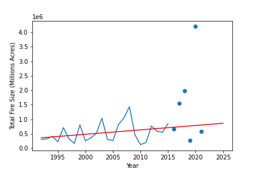
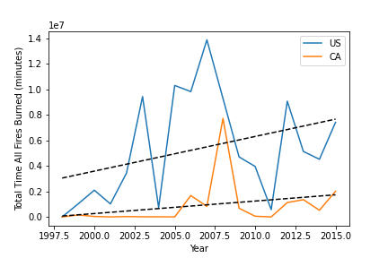
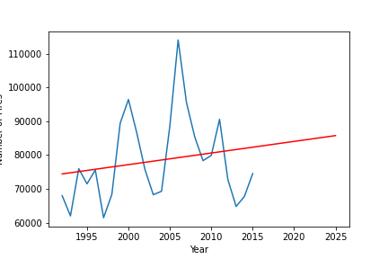
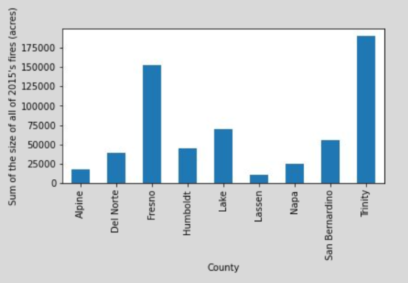

The Fire Analysis Project was a homework assignment for the U.C. Davis Data Anlalytics Certificate Program. This project is the product of the colaboration of Jagjeet Khalsa, Robert Ward, Alex Paras, and of course myself (Jon Scheaffer). The goal of this project was to anlyze 188-million-us-wildfires with respect to epa-historical-air-quality. Both of these sources are from Kaggle.
Some of the aspects of the data we wanted to explore are:
To see original project, please click link here.










| OBJECTID | FOD_ID | FPA_ID | FIRE_YEAR | FIPS_NAME | COMPLEX_NAME | FIRE_NAME | FIRE_SIZE | DISCOVERY_DATE | FIRE_CODE | STAT_CAUSE_DESCR | CONT_DATE | STATE | LATITUDE | LONGITUDE | DISCOVERY_TIME | CONT_TIME | |
|---|---|---|---|---|---|---|---|---|---|---|---|---|---|---|---|---|---|
| 0 | 1 | 1 | FS-1418826 | 2005 | Plumas | NaN | FOUNTAIN | 0.10 | 2453403.5 | BJ8K | Miscellaneous | 2453403.5 | CA | 40.036944 | -121.005833 | 1300 | 1730 |
| 1 | 2 | 2 | FS-1418827 | 2004 | Placer | NaN | PIGEON | 0.25 | 2453137.5 | AAC0 | Lightning | 2453137.5 | CA | 38.933056 | -120.404444 | 0845 | 1530 |
| 2 | 3 | 3 | FS-1418835 | 2004 | El Dorado | NaN | SLACK | 0.10 | 2453156.5 | A32W | Debris Burning | 2453156.5 | CA | 38.984167 | -120.735556 | 1921 | 2024 |
| 3 | 4 | 4 | FS-1418845 | 2004 | Alpine | NaN | DEER | 0.10 | 2453184.5 | NaN | Lightning | 2453189.5 | CA | 38.559167 | -119.913333 | 1600 | 1400 |
| 4 | 5 | 5 | FS-1418847 | 2004 | Alpine | NaN | STEVENOT | 0.10 | 2453184.5 | NaN | Lightning | 2453189.5 | CA | 38.559167 | -119.933056 | 1600 | 1200 |
| 5 | 6 | 6 | FS-1418849 | 2004 | Amador | NaN | HIDDEN | 0.10 | 2453186.5 | NaN | Lightning | 2453187.5 | CA | 38.635278 | -120.103611 | 1800 | 1600 |
| 6 | 7 | 7 | FS-1418851 | 2004 | El Dorado | NaN | FORK | 0.10 | 2453187.5 | NaN | Lightning | 2453188.5 | CA | 38.688333 | -120.153333 | 1800 | 1400 |
| 7 | 8 | 8 | FS-1418854 | 2005 | NaN | NaN | SLATE | 0.80 | 2453437.5 | BK5X | Debris Burning | 2453437.5 | CA | 40.968056 | -122.433889 | 1300 | 1600 |
| 8 | 9 | 9 | FS-1418856 | 2005 | NaN | NaN | SHASTA | 1.00 | 2453444.5 | BLPQ | Debris Burning | 2453444.5 | CA | 41.233611 | -122.283333 | 1200 | 1700 |
| 9 | 10 | 10 | FS-1418859 | 2004 | Amador | NaN | TANGLEFOOT | 0.10 | 2453187.5 | NaN | Lightning | 2453188.5 | CA | 38.548333 | -120.149167 | 1800 | 1800 |
| 10 | 11 | 11 | FS-1418861 | 2004 | El Dorado | NaN | FORK #2 | 0.10 | 2453188.5 | NaN | Lightning | 2453189.5 | CA | 38.691667 | -120.159722 | 1830 | 1900 |
| 11 | 12 | 12 | FS-1418863 | 2004 | Amador | NaN | MOKE #2 | 0.10 | 2453188.5 | NaN | Lightning | 2453189.5 | CA | 38.527500 | -120.106111 | 1730 | 2000 |
| 12 | 13 | 13 | FS-1418865 | 2004 | El Dorado | NaN | WRIGHTS | 0.10 | 2453251.5 | NaN | Miscellaneous | 2453251.5 | CA | 38.786667 | -120.193333 | 1600 | 1630 |
| 13 | 14 | 14 | FS-1418872 | 2004 | Amador | NaN | TIGER | 6.00 | 2453276.5 | NaN | Campfire | 2453276.5 | CA | 38.433333 | -120.510000 | 1200 | 1800 |
| 14 | 15 | 15 | FS-1418874 | 2004 | El Dorado | NaN | BROWN | 0.20 | 2453281.5 | NaN | Lightning | 2453281.5 | CA | 38.675833 | -120.279722 | 0630 | 1500 |
| 15 | 16 | 16 | FS-1418876 | 2004 | El Dorado | NaN | SOPIAGO | 0.10 | 2453281.5 | NaN | Lightning | 2453281.5 | CA | 38.564167 | -120.542222 | 0930 | 1400 |
| 16 | 17 | 17 | FS-1418878 | 2004 | Amador | NaN | POWER | 16823.00 | 2453284.5 | NaN | Equipment Use | 2453299.5 | CA | 38.523333 | -120.211667 | 1415 | 1000 |
| 17 | 18 | 18 | FS-1418881 | 2004 | El Dorado | NaN | FREDS | 7700.00 | 2453291.5 | BHA3 | Equipment Use | 2453295.5 | CA | 38.780000 | -120.260000 | 1618 | 1800 |
| 18 | 19 | 19 | FS-1418884 | 2004 | El Dorado | NaN | HARTLESS | 0.10 | 2453329.5 | NaN | Debris Burning | 2453330.5 | CA | 38.945000 | -120.411667 | 2000 | 1630 |
| 19 | 20 | 20 | FS-1418887 | 2004 | Lincoln | NaN | SPRING | 0.10 | 2453160.5 | AVPA | Lightning | 2453160.5 | NM | 33.440833 | -105.720556 | 1030 | 1400 |
| 20 | 21 | 21 | FS-1418888 | 2004 | Lincoln | NaN | ANGRY | 0.10 | 2453175.5 | A49Y | Lightning | 2453175.5 | NM | 33.307222 | -105.628611 | 1530 | 1940 |
| 21 | 22 | 22 | FS-1418893 | 2004 | Lincoln | NaN | DARK | 0.10 | 2453177.5 | A5DG | Lightning | 2453178.5 | NM | 33.444444 | -105.768056 | 1440 | 1100 |
| 22 | 23 | 23 | FS-1418894 | 2004 | Lincoln | NaN | CHURCH #2 | 0.10 | 2453181.5 | AVP4 | Lightning | 2453182.5 | NM | 33.559444 | -105.766111 | 1910 | 1300 |
| 23 | 24 | 24 | FS-1418895 | 2004 | Lincoln | NaN | PINE CONE | 0.25 | 2453187.5 | AVP4 | Lightning | 2453188.5 | NM | 33.308056 | -105.526111 | 1250 | 1110 |
| 24 | 25 | 25 | FS-1418896 | 2004 | Lincoln | NaN | EAGLE | 2.50 | 2453187.5 | AVP4 | Lightning | 2453192.5 | NM | 33.545278 | -105.229444 | 1712 | 1450 |
| 25 | 26 | 26 | FS-1418897 | 2004 | Lincoln | NaN | BACHELOR | 10.00 | 2453206.5 | AVP4 | Lightning | 2453206.5 | NM | 33.315833 | -105.512222 | 1405 | 1600 |
| 26 | 27 | 27 | FS-1418898 | 2004 | Lincoln | NaN | SONTERRA | 8.20 | 2453082.5 | A0SY | Miscellaneous | 2453082.5 | NM | 33.444444 | -105.631111 | 1145 | 2030 |
| 27 | 28 | 28 | FS-1418903 | 2004 | Lincoln | NaN | PEPPER | 0.10 | 2453222.5 | AVP4 | Lightning | 2453222.5 | NM | 33.368056 | -105.507222 | 0945 | 1815 |
| 28 | 29 | 29 | FS-1418904 | 2004 | Lincoln | NaN | 120A | 0.25 | 2453082.5 | A0TF | Debris Burning | 2453082.5 | NM | 33.385278 | -105.638611 | 1655 | 2130 |
| 29 | 30 | 30 | FS-1418905 | 2004 | Lincoln | NaN | MUSKETBURN | 0.25 | 2453136.5 | A3B1 | Debris Burning | 2453136.5 | NM | 33.382778 | -105.700278 | 1515 | 1552 |
| 30 | 31 | 31 | FS-1418906 | 2004 | Lincoln | NaN | OREGON | 0.10 | 2453175.5 | A49X | Lightning | 2453175.5 | NM | 33.379722 | -105.680278 | 1645 | 2020 |
| 31 | 32 | 32 | FS-1418907 | 2005 | Deschutes | NaN | 0028 | 0.10 | 2453406.5 | BJ9H | Campfire | 2453407.5 | OR | 43.995556 | -121.414167 | 0943 | 1226 |
| 32 | 33 | 33 | FS-1418909 | 2004 | Lincoln | NaN | CHURCH #1 | 0.10 | 2453181.5 | AVP4 | Lightning | 2453182.5 | NM | 33.496667 | -105.739722 | 1927 | 1749 |
| 33 | 34 | 34 | FS-1418910 | 2004 | Lincoln | NaN | DRY MILLS | 0.10 | 2453247.5 | AVP4 | Lightning | 2453247.5 | NM | 33.417778 | -105.707500 | 1030 | 1501 |
| 34 | 35 | 35 | FS-1418911 | 2004 | Lincoln | NaN | AGUA FRIA | 0.10 | 2453289.5 | BEY3 | Lightning | 2453289.5 | NM | 33.255278 | -105.626111 | 1015 | 1300 |
| 35 | 36 | 36 | FS-1418916 | 2005 | Deschutes | NaN | 0044 | 0.10 | 2453434.5 | BK2W | Campfire | 2453434.5 | OR | 44.043333 | -121.386111 | 1042 | 1107 |
| 36 | 37 | 37 | FS-1418917 | 2005 | Buncombe | NaN | TANNASSEE GAP I | 0.60 | 2453440.5 | BK8V | Equipment Use | 2453440.5 | NC | 35.228333 | -82.884444 | 1500 | 1800 |
| 37 | 38 | 38 | FS-1418918 | 2005 | Macon | NaN | HOWARD GAP | 50.30 | 2453397.5 | BJ66 | Arson | 2453398.5 | NC | 35.000278 | -83.351111 | 2200 | 0300 |
| 38 | 39 | 39 | FS-1418919 | 2005 | Caldwell | NaN | HOT SPRINGS | 0.10 | 2453407.5 | BJ9U | Arson | 2453407.5 | NC | 35.931667 | -81.716667 | 1900 | 2000 |
| 39 | 40 | 40 | FS-1418920 | 2005 | Caldwell | NaN | AUSTIN CREEK | 125.00 | 2453413.5 | BKC8 | Debris Burning | 2453414.5 | NC | 36.001667 | -81.590000 | 1520 | 0330 |
| 40 | 41 | 41 | FS-1418921 | 2005 | Avery | NaN | HEADQUARTERS | 25.00 | 2453476.5 | BN3Z | Debris Burning | 2453476.5 | NC | 35.985000 | -81.851667 | 1625 | 2200 |
| 41 | 42 | 42 | FS-1418922 | 2005 | Caldwell | NaN | BLUFF | 3.00 | 2453499.5 | BQ5X | Debris Burning | 2453499.5 | NC | 35.900000 | -81.683333 | 1343 | 1530 |
| 42 | 43 | 43 | FS-1418923 | 2005 | Caldwell | NaN | MOUNTAIN | 10.00 | 2453499.5 | BQ54 | Debris Burning | 2453499.5 | NC | 36.035000 | -81.585000 | 1900 | 2330 |
| 43 | 44 | 44 | FS-1418924 | 2005 | Deschutes | NaN | 0088 | 0.10 | 2453465.5 | BMP6 | Campfire | 2453465.5 | OR | 43.955556 | -121.352222 | 1205 | 1210 |
| 44 | 45 | 45 | FS-1418933 | 2005 | Converse | NaN | JOHN | 0.25 | 2453527.5 | BTW2 | Lightning | 2453527.5 | WY | 42.354722 | -105.505556 | 1530 | 2030 |
| 45 | 46 | 46 | FS-1418934 | 2005 | Macon | NaN | WATERLOO | 10.00 | 2453440.5 | BK9X | Miscellaneous | 2453440.5 | NC | 35.001389 | -83.384167 | 1330 | 1930 |
| 46 | 47 | 47 | FS-1418935 | 2005 | Wheeler | NaN | EARLY | 5.00 | 2453440.5 | BE07 | Miscellaneous | 2453440.5 | OR | 44.911111 | -119.696111 | 1000 | 1401 |
| 47 | 48 | 48 | FS-1418940 | 2005 | NaN | NaN | HATCH | 0.50 | 2453535.5 | BEX1 | Lightning | 2453535.5 | CO | 39.292222 | -105.183056 | 1300 | 1530 |
| 48 | 49 | 49 | FS-1418943 | 2005 | Deschutes | NaN | 0032 | 0.10 | 2453417.5 | BKG2 | Campfire | 2453417.5 | OR | 43.725278 | -121.574167 | 1535 | 1600 |
| 49 | 50 | 50 | FS-1418944 | 2005 | Deschutes | NaN | 0041 | 0.10 | 2453431.5 | BK1B | Debris Burning | 2453431.5 | OR | 44.410000 | -121.315556 | 1640 | 1745 |
| 50 | 51 | 51 | FS-1418945 | 2005 | Lake | NaN | HALFWAY 108 | 0.10 | 2453518.5 | BE0X | Lightning | 2453518.5 | OR | 42.133889 | -121.234167 | 1441 | 1911 |
| 51 | 52 | 52 | FS-1418953 | 2005 | Lake | NaN | PARADISE 104 | 0.10 | 2453507.5 | BR37 | Miscellaneous | 2453507.5 | OR | 42.311389 | -120.902778 | 1400 | 1500 |
| 52 | 53 | 53 | FS-1418954 | 2005 | Lake | NaN | STUMP 106 | 0.10 | 2453517.5 | B50B | Arson | 2453517.5 | OR | 42.950833 | -120.836111 | 1539 | 1655 |
| 53 | 54 | 54 | FS-1418965 | 2005 | Sheridan | NaN | CRYSTAL SPRINGS | 0.10 | 2453467.5 | BM2B | Miscellaneous | 2453467.5 | WY | 44.816111 | -107.331111 | 1615 | 1700 |
| 54 | 55 | 55 | FS-1418966 | 2005 | Grays Harbor | NaN | UPPER JIM | 0.30 | 2453540.5 | BE07 | Lightning | 2453541.5 | WA | 46.220833 | -117.785000 | 1430 | 1400 |
| 55 | 56 | 56 | FS-1418969 | 2005 | Lake | NaN | COTTONWOOD 128 | 0.10 | 2453546.5 | BE0X | Lightning | 2453547.5 | OR | 42.386944 | -120.808611 | 1800 | 1230 |
| 56 | 57 | 57 | FS-1418970 | 2005 | Lake | NaN | OBENCHAIN 125 | 2.00 | 2453546.5 | BE0X | Lightning | 2453546.5 | OR | 42.514722 | -121.120000 | 1300 | 1745 |
| 57 | 58 | 58 | FS-1418971 | 2005 | Lincoln | NaN | IOWA FLATS | 0.50 | 2453437.5 | BEW1 | Debris Burning | 2453437.5 | MT | 48.921944 | -115.092500 | 1334 | 1400 |
| 58 | 59 | 59 | FS-1418973 | 2005 | Lincoln | NaN | GATEWAY | 9.00 | 2453435.5 | BK5T | Campfire | 2453435.5 | MT | 48.998333 | -115.165556 | 1510 | 1900 |
| 59 | 60 | 60 | FS-1418974 | 2005 | Lake | NaN | JUNIOR 122 | 0.10 | 2453545.5 | BE0X | Lightning | 2453545.5 | OR | 42.921389 | -121.030833 | 1845 | 2230 |
| 60 | 61 | 61 | FS-1418975 | 2005 | Sanders | NaN | HAINES POINT | 5.00 | 2453537.5 | BUS5 | Campfire | 2453538.5 | MT | 47.665556 | -115.569167 | 1234 | 1321 |
| 61 | 62 | 62 | FS-1418976 | 2005 | NaN | NaN | TROUT CREEK II | 0.20 | 2453520.5 | BEX1 | Lightning | 2453521.5 | CO | 38.913333 | -105.983611 | 1100 | 1218 |
| 62 | 63 | 63 | FS-1418978 | 2005 | NaN | NaN | MT ELBERT | 0.10 | 2453542.5 | BU9J | Campfire | 2453542.5 | CO | 39.100278 | -106.367500 | 1241 | 1506 |
| 63 | 64 | 64 | FS-1418993 | 2005 | Utah | NaN | RED HOLLOW # 1 | 0.10 | 2453549.5 | BEZ9 | Lightning | 2453549.5 | UT | 40.088889 | -111.378333 | 1654 | 1757 |
| 64 | 65 | 65 | FS-1418994 | 2005 | Lincoln | NaN | LLAMA | 2.00 | 2453487.5 | BP98 | Debris Burning | 2453487.5 | MT | 48.899444 | -115.106944 | 1232 | 1800 |
| 65 | 66 | 66 | FS-1418995 | 2005 | Lincoln | NaN | HWY 37 | 0.10 | 2453484.5 | BQC0 | Miscellaneous | 2453484.5 | MT | 48.906944 | -115.076667 | 1930 | 1945 |
| 66 | 67 | 67 | FS-1419001 | 2005 | Lincoln | NaN | RACE TRACK 4 | 0.10 | 2453555.5 | BYE1 | Campfire | 2453555.5 | MT | 48.407778 | -115.558333 | 0800 | 0815 |
| 67 | 68 | 68 | FS-1419017 | 2005 | Lincoln | NaN | RACE TRACK 5 | 0.10 | 2453556.5 | BYE5 | Campfire | 2453556.5 | MT | 48.407778 | -115.557778 | 0715 | 0745 |
| 68 | 69 | 69 | FS-1419031 | 2005 | Lake | NaN | THOMAS CREEK 126 | 0.10 | 2453546.5 | BE0X | Lightning | 2453546.5 | OR | 42.302778 | -120.543611 | 1645 | 1900 |
| 69 | 70 | 70 | FS-1419033 | 2005 | Lake | NaN | DOG 129 | 0.50 | 2453547.5 | BE0X | Lightning | 2453547.5 | OR | 42.136944 | -120.701667 | 1540 | 2100 |
| 70 | 71 | 71 | FS-1419039 | 2005 | Lincoln | NaN | OLSEN HILL | 17.00 | 2453492.5 | BQW1 | Debris Burning | 2453492.5 | MT | 48.966667 | -115.206667 | 2000 | 2200 |
| 71 | 72 | 72 | FS-1419041 | 2005 | Lincoln | NaN | SHOOTING RANGE | 0.10 | 2453519.5 | BS6S | Campfire | 2453519.5 | MT | 48.964444 | -115.185833 | 2000 | 2100 |
| 72 | 73 | 74 | FS-1419045 | 2005 | Lincoln | NaN | WATER TANK | 3.00 | 2453552.5 | BXR5 | Miscellaneous | 2453552.5 | MT | 48.894444 | -115.165278 | 2030 | 2300 |
| 73 | 74 | 75 | FS-1419047 | 2005 | Lincoln | NaN | BANKS | 0.25 | 2453556.5 | BYS6 | Debris Burning | 2453556.5 | MT | 48.816944 | -115.111389 | 1616 | 2115 |
| 74 | 75 | 76 | FS-1419050 | 2005 | Lincoln | NaN | AIRPORT RD | 0.10 | 2453554.5 | BY03 | Miscellaneous | 2453554.5 | MT | 48.962500 | -115.085556 | 1745 | 1815 |
| 75 | 76 | 77 | FS-1419053 | 2005 | Coconino | NaN | BENHAM | 0.50 | 2453506.5 | BEY2 | Campfire | 2453506.5 | AZ | 35.236389 | -112.216389 | 1713 | 1949 |
| 76 | 77 | 78 | FS-1419054 | 2005 | NaN | NaN | LINTO | 0.10 | 2453548.5 | BWP8 | Debris Burning | 2453548.5 | CA | 41.037222 | -123.533056 | 1007 | 1130 |
| 77 | 78 | 79 | FS-1419057 | 2005 | Johnson | NaN | HUNTER MESA | 0.25 | 2453474.5 | BNR0 | Miscellaneous | 2453474.5 | WY | 44.335556 | -106.951944 | 1050 | 1300 |
| 78 | 79 | 80 | FS-1419058 | 2005 | Union | NaN | SMITH RIDGE 1 | 0.10 | 2453539.5 | BE07 | Lightning | 2453540.5 | OR | 45.554444 | -118.101944 | 1412 | 1848 |
| 79 | 80 | 81 | FS-1419060 | 2005 | Lincoln | NaN | BEARING | 0.10 | 2453503.5 | BRR9 | Equipment Use | 2453503.5 | MT | 48.282222 | -115.510556 | 1300 | 1420 |
| 80 | 81 | 82 | FS-1419061 | 2005 | Lincoln | NaN | PIPE FLATS 2 | 0.10 | 2453561.5 | BZ0T | Campfire | 2453561.5 | MT | 48.416667 | -115.546111 | 0915 | 0940 |
| 81 | 82 | 83 | FS-1419063 | 2005 | Lincoln | NaN | OBSIDIAN | 0.10 | 2453554.5 | BYD9 | Campfire | 2453555.5 | MT | 48.348889 | -115.490833 | 2000 | 1351 |
| 82 | 83 | 84 | FS-1419065 | 2005 | Lincoln | NaN | RACETRACK #7 | 0.10 | 2453560.5 | BZ0R | Campfire | 2453560.5 | MT | 48.408333 | -115.558333 | 1225 | 1254 |
| 83 | 84 | 85 | FS-1419067 | 2005 | Graham | NaN | GILLESPIE | 0.10 | 2453508.5 | BR3U | Equipment Use | 2453508.5 | AZ | 32.560556 | -109.772500 | 1145 | 1400 |
| 84 | 85 | 86 | FS-1419068 | 2005 | Lincoln | NaN | HWY 2 | 0.30 | 2453555.5 | BYE0 | Miscellaneous | NaN | MT | 48.228056 | -115.480278 | 0530 | NaN |
| 85 | 86 | 87 | FS-1419069 | 2005 | Chaves | NaN | ANTELOPE | 45.60 | 2453558.5 | B2B8 | Lightning | 2453559.5 | NM | 32.467222 | -104.941667 | 1731 | 1100 |
| 86 | 87 | 88 | FS-1419070 | 2005 | Graham | NaN | CUNNINGHAM | 0.50 | 2453547.5 | BWD2 | Lightning | 2453547.5 | AZ | 32.685556 | -109.869167 | 1230 | 1900 |
| 87 | 88 | 89 | FS-1419071 | 2005 | NaN | NaN | CANYON | 0.10 | 2453484.5 | BP31 | Miscellaneous | 2453484.5 | CA | 34.174444 | -117.765000 | 0710 | 0745 |
| 88 | 89 | 90 | FS-1419073 | 2005 | NaN | NaN | FOUNTAIN | 0.50 | 2453554.5 | BE8B | Children | 2453554.5 | CA | 34.153889 | -117.841111 | 1650 | 1800 |
| 89 | 90 | 91 | FS-1419075 | 2005 | Grant | NaN | DUNCANS RIDGE | 0.10 | 2453542.5 | BE07 | Lightning | 2453542.5 | OR | 44.988611 | -118.938889 | 1648 | 1944 |
| 90 | 91 | 92 | FS-1419077 | 2005 | NaN | NaN | ROBIN | 0.10 | 2453546.5 | BV7R | Debris Burning | 2453546.5 | CA | 38.983889 | -120.802500 | 0905 | 1332 |
| 91 | 92 | 93 | FS-1419081 | 2005 | Pennington | NaN | VICTORIA | 0.10 | 2453372.5 | BJ0K | Campfire | 2453372.5 | SD | 44.012778 | -103.382500 | 0909 | 1010 |
| 92 | 93 | 94 | FS-1419086 | 2005 | Sandoval | NaN | MULLETT | 0.10 | 2453517.5 | BEY5 | Lightning | 2453518.5 | NM | 36.016667 | -106.716667 | 1700 | 1215 |
| 93 | 94 | 95 | FS-1419087 | 2005 | Lake | NaN | SNAG 124 | 0.10 | 2453546.5 | BE0X | Lightning | 2453546.5 | OR | 42.620833 | -120.845000 | 0950 | 1545 |
| 94 | 95 | 96 | FS-1419088 | 2005 | Graham | NaN | FRY MESA | 0.10 | 2453565.5 | B0EV | Arson | 2453565.5 | AZ | 32.753611 | -109.831389 | 1810 | 1900 |
| 95 | 96 | 97 | FS-1419089 | 2005 | Alpine | NaN | HOT SPRINGS | 0.10 | 2453496.5 | BEZ8 | Debris Burning | 2453499.5 | CA | 38.700278 | -119.840556 | 1145 | 1330 |
| 96 | 97 | 98 | FS-1419090 | 2005 | Mono | NaN | SHINGLE | 0.01 | 2453559.5 | BZB0 | Arson | 2453559.5 | CA | 38.453611 | -119.458611 | 0015 | 0045 |
| 97 | 98 | 99 | FS-1419093 | 2005 | Rio Arriba | NaN | CEDAR SPRINGS | 0.10 | 2453532.5 | F064 | Lightning | 2453532.5 | NM | 36.669444 | -107.253611 | 1901 | 2000 |
| 98 | 99 | 100 | FS-1419095 | 2005 | Rio Arriba | NaN | BUZZARD | 0.25 | 2453543.5 | F084 | Lightning | 2453543.5 | NM | 36.876389 | -107.219167 | 1820 | 2315 |
| 99 | 100 | 101 | FS-1419096 | 2005 | Lincoln | NaN | STRAWBERRY | 0.10 | 2453553.5 | BXR6 | Railroad | 2453553.5 | MT | 48.458333 | -115.666667 | 1300 | 1435 |
| state_code | county_code | site_num | parameter_code | poc | latitude | longitude | datum | parameter_name | sample_duration | pollutant_standard | metric_used | method_name | year | units_of_measure | event_type | observation_count | observation_percent | completeness_indicator | valid_day_count | required_day_count | exceptional_data_count | null_data_count | primary_exceedance_count | secondary_exceedance_count | certification_indicator | num_obs_below_mdl | arithmetic_mean | arithmetic_standard_dev | first_max_value | first_max_datetime | second_max_value | second_max_datetime | third_max_value | third_max_datetime | fourth_max_value | fourth_max_datetime | first_max_non_overlapping_value | first_no_max_datetime | second_max_non_overlapping_value | second_no_max_datetime | ninety_nine_percentile | ninety_eight_percentile | ninety_five_percentile | ninety_percentile | seventy_five_percentile | fifty_percentile | ten_percentile | local_site_name | address | state_name | county_name | city_name | cbsa_name | date_of_last_change | |
|---|---|---|---|---|---|---|---|---|---|---|---|---|---|---|---|---|---|---|---|---|---|---|---|---|---|---|---|---|---|---|---|---|---|---|---|---|---|---|---|---|---|---|---|---|---|---|---|---|---|---|---|---|---|---|---|
| 0 | 6 | 27 | 20 | 61104 | 1 | 36.057185 | -117.861369 | NAD83 | Wind Direction - Resultant | 1 HOUR | NaN | Observed Values | INSTRUMENTAL - VECTOR SUMMATION | 2019 | Degrees Compass | No Events | 8748 | 100.0 | Y | 365 | 365 | 0 | 12 | NaN | NaN | Certification not required | 0 | 161.689449 | 96.641771 | 360.000 | 2019-01-23 17:00:00+00:00 | 360.000 | 2019-04-22 09:00:00+00:00 | 359.900 | 2019-02-16 02:00:00+00:00 | 359.900 | 2019-11-04 05:00:00+00:00 | NaN | NaN | NaN | NaN | 357.800 | 356.100 | 346.900 | 323.200 | 227.900 | 132.900 | 33.000 | Coso Gate | COSO GATE | California | Inyo | NaN | Bishop, CA | 2020-05-21 |
| 1 | 6 | 27 | 20 | 61101 | 1 | 36.057185 | -117.861369 | NAD83 | Wind Speed - Scalar | 1 HOUR | NaN | Observed Values | INSTRUMENTAL - ELECTRONIC OR MACHINE AVG. | 1999 | Knots | No Events | 8744 | 100.0 | Y | 364 | 365 | 0 | 16 | NaN | NaN | Certification not required | 0 | 8.929094 | 5.814807 | 38.800 | 1999-04-04 00:00:00+00:00 | 37.100 | 1999-04-04 01:00:00+00:00 | 36.900 | 1999-04-22 12:00:00+00:00 | 36.700 | 1999-04-04 02:00:00+00:00 | NaN | NaN | NaN | NaN | 26.600 | 23.500 | 19.400 | 16.500 | 12.600 | 8.000 | 2.300 | Coso Gate | COSO GATE | California | Inyo | NaN | Bishop, CA | 2020-05-21 |
| 2 | 6 | 27 | 20 | 62201 | 1 | 36.057185 | -117.861369 | NAD83 | Relative Humidity | 1 HOUR | NaN | Observed Values | INSTRUMENTAL - COMPUTED(INDIRECT) | 1999 | Percent relative humidity | No Events | 8755 | 100.0 | Y | 365 | 365 | 0 | 5 | NaN | NaN | Certification not required | 0 | 29.532381 | 17.262424 | 100.000 | 1999-01-24 19:00:00+00:00 | 100.000 | 1999-01-24 20:00:00+00:00 | 100.000 | 1999-01-24 21:00:00+00:00 | 100.000 | 1999-01-24 22:00:00+00:00 | NaN | NaN | NaN | NaN | 96.000 | 86.000 | 66.000 | 51.000 | 35.000 | 25.000 | 14.000 | Coso Gate | COSO GATE | California | Inyo | NaN | Bishop, CA | 2020-05-21 |
| 3 | 6 | 27 | 20 | 61106 | 1 | 36.057185 | -117.861369 | NAD83 | Std Dev Hz Wind Direction | 1 HOUR | NaN | Observed Values | INSTRUMENTAL - ARITHMETIC STANDARD DEVIATION | 2018 | Degrees Compass | No Events | 8756 | 100.0 | Y | 365 | 365 | 0 | 4 | NaN | NaN | Certification not required | 0 | 24.100137 | 16.569915 | 79.300 | 2018-07-01 10:00:00+00:00 | 79.100 | 2018-05-31 19:00:00+00:00 | 78.900 | 2018-12-02 07:00:00+00:00 | 78.500 | 2018-12-30 08:00:00+00:00 | NaN | NaN | NaN | NaN | 70.900 | 67.200 | 59.600 | 50.600 | 32.900 | 18.100 | 8.000 | Coso Gate | COSO GATE | California | Inyo | NaN | Bishop, CA | 2020-05-21 |
| 4 | 6 | 27 | 20 | 61106 | 1 | 36.057185 | -117.861369 | NAD83 | Std Dev Hz Wind Direction | 1 HOUR | NaN | Observed Values | INSTRUMENTAL - ARITHMETIC STANDARD DEVIATION | 2019 | Degrees Compass | No Events | 8748 | 100.0 | Y | 365 | 365 | 0 | 12 | NaN | NaN | Certification not required | 0 | 23.739106 | 16.333843 | 80.500 | 2019-06-16 03:00:00+00:00 | 78.900 | 2019-03-02 14:00:00+00:00 | 78.900 | 2019-12-16 13:00:00+00:00 | 78.200 | 2019-11-08 19:00:00+00:00 | NaN | NaN | NaN | NaN | 71.100 | 68.000 | 59.800 | 49.300 | 31.800 | 17.700 | 8.100 | Coso Gate | COSO GATE | California | Inyo | NaN | Bishop, CA | 2020-05-21 |
| 5 | 6 | 27 | 20 | 62201 | 1 | 36.057185 | -117.861369 | NAD83 | Relative Humidity | 1 HOUR | NaN | Observed Values | INSTRUMENTAL - COMPUTED(INDIRECT) | 2013 | Percent relative humidity | No Events | 8733 | 100.0 | Y | 364 | 365 | 0 | 27 | NaN | NaN | Certification not required | 0 | 28.192946 | 16.280874 | 100.000 | 2013-01-24 03:00:00+00:00 | 100.000 | 2013-01-24 04:00:00+00:00 | 100.000 | 2013-01-24 09:00:00+00:00 | 100.000 | 2013-01-24 10:00:00+00:00 | NaN | NaN | NaN | NaN | 90.000 | 78.000 | 62.000 | 50.000 | 34.000 | 24.000 | 13.000 | Coso Gate | COSO GATE | California | Inyo | NaN | Bishop, CA | 2020-05-21 |
| 6 | 6 | 27 | 20 | 61103 | 1 | 36.057185 | -117.861369 | NAD83 | Wind Speed - Resultant | 1 HOUR | NaN | Observed Values | INSTRUMENTAL - VECTOR SUMMATION | 2017 | Knots | No Events | 8751 | 100.0 | Y | 365 | 365 | 0 | 9 | NaN | NaN | Certification not required | 0 | 8.175843 | 6.054626 | 44.300 | 2017-03-31 03:00:00+00:00 | 38.600 | 2017-12-16 19:00:00+00:00 | 37.200 | 2017-03-31 02:00:00+00:00 | 36.700 | 2017-12-16 20:00:00+00:00 | NaN | NaN | NaN | NaN | 25.300 | 22.900 | 19.300 | 16.600 | 12.000 | 7.100 | 1.300 | Coso Gate | COSO GATE | California | Inyo | NaN | Bishop, CA | 2020-05-21 |
| 7 | 6 | 27 | 20 | 62101 | 1 | 36.057185 | -117.861369 | NAD83 | Outdoor Temperature | 1 HOUR | NaN | Observed Values | INSTRUMENTAL - ELECTRONIC OR MACHINE AVG. | 2015 | Degrees Fahrenheit | No Events | 8536 | 97.0 | Y | 355 | 365 | 0 | 224 | NaN | NaN | Certification not required | 0 | 63.598407 | 15.140805 | 100.000 | 2015-06-20 16:00:00+00:00 | 99.000 | 2015-06-19 17:00:00+00:00 | 99.000 | 2015-06-20 15:00:00+00:00 | 99.000 | 2015-06-20 17:00:00+00:00 | NaN | NaN | NaN | NaN | 93.000 | 91.000 | 88.000 | 84.000 | 76.000 | 63.000 | 43.000 | Coso Gate | COSO GATE | California | Inyo | NaN | Bishop, CA | 2020-05-21 |
| 8 | 6 | 27 | 20 | 61104 | 1 | 36.057185 | -117.861369 | NAD83 | Wind Direction - Resultant | 1 HOUR | NaN | Observed Values | INSTRUMENTAL - VECTOR SUMMATION | 2016 | Degrees Compass | No Events | 8774 | 100.0 | Y | 366 | 366 | 0 | 10 | NaN | NaN | Certification not required | 0 | 157.607556 | 91.187234 | 360.000 | 2016-02-15 22:00:00+00:00 | 360.000 | 2016-11-02 19:00:00+00:00 | 359.900 | 2016-02-15 14:00:00+00:00 | 359.900 | 2016-04-25 21:00:00+00:00 | NaN | NaN | NaN | NaN | 357.800 | 355.400 | 342.400 | 309.300 | 208.100 | 131.500 | 54.100 | Coso Gate | COSO GATE | California | Inyo | NaN | Bishop, CA | 2020-05-21 |
| 9 | 6 | 27 | 20 | 42402 | 1 | 36.057185 | -117.861369 | NAD83 | Hydrogen sulfide | 1 HOUR | NaN | Observed Values | INSTRUMENTAL - PULSED FLUORESCENT | 2000 | Parts per million | No Events | 8577 | 98.0 | Y | 359 | 366 | 0 | 207 | NaN | NaN | Certification not required | 0 | 0.000366 | 0.000564 | 0.007 | 2000-07-16 04:00:00+00:00 | 0.006 | 2000-05-08 04:00:00+00:00 | 0.004 | 2000-01-14 03:00:00+00:00 | 0.004 | 2000-02-01 18:00:00+00:00 | NaN | NaN | NaN | NaN | 0.002 | 0.002 | 0.001 | 0.001 | 0.001 | 0.000 | 0.000 | Coso Gate | COSO GATE | California | Inyo | NaN | Bishop, CA | 2020-05-21 |
| 10 | 6 | 27 | 20 | 61102 | 1 | 36.057185 | -117.861369 | NAD83 | Wind Direction - Scalar | 1 HOUR | NaN | Observed Values | INSTRUMENTAL - ELECTRONIC OR MACHINE AVERAGE | 2015 | Degrees Compass | No Events | 8734 | 100.0 | Y | 364 | 365 | 0 | 26 | NaN | NaN | Certification not required | 0 | 158.118273 | 94.207875 | 360.000 | 2015-01-08 02:00:00+00:00 | 360.000 | 2015-01-13 18:00:00+00:00 | 360.000 | 2015-01-22 01:00:00+00:00 | 360.000 | 2015-01-25 12:00:00+00:00 | NaN | NaN | NaN | NaN | 358.000 | 356.000 | 345.000 | 319.000 | 212.000 | 132.000 | 33.000 | Coso Gate | COSO GATE | California | Inyo | NaN | Bishop, CA | 2020-05-21 |
| 11 | 6 | 27 | 20 | 61103 | 1 | 36.057185 | -117.861369 | NAD83 | Wind Speed - Resultant | 1 HOUR | NaN | Observed Values | INSTRUMENTAL - VECTOR SUMMATION | 2019 | Knots | No Events | 8748 | 100.0 | Y | 365 | 365 | 0 | 12 | NaN | NaN | Certification not required | 0 | 8.074154 | 6.087192 | 37.500 | 2019-01-21 20:00:00+00:00 | 36.600 | 2019-01-21 21:00:00+00:00 | 34.200 | 2019-10-27 15:00:00+00:00 | 33.900 | 2019-04-09 20:00:00+00:00 | NaN | NaN | NaN | NaN | 26.800 | 23.400 | 19.400 | 16.200 | 11.900 | 6.800 | 1.300 | Coso Gate | COSO GATE | California | Inyo | NaN | Bishop, CA | 2020-05-21 |
| 12 | 6 | 27 | 20 | 61101 | 1 | 36.057185 | -117.861369 | NAD83 | Wind Speed - Scalar | 1 HOUR | NaN | Observed Values | INSTRUMENTAL - ELECTRONIC OR MACHINE AVG. | 2014 | Knots | No Events | 8740 | 100.0 | Y | 364 | 365 | 0 | 20 | NaN | NaN | Certification not required | 0 | 8.829462 | 5.816895 | 45.000 | 2014-12-31 08:00:00+00:00 | 44.000 | 2014-12-31 03:00:00+00:00 | 43.800 | 2014-12-31 04:00:00+00:00 | 43.500 | 2014-12-31 07:00:00+00:00 | NaN | NaN | NaN | NaN | 25.900 | 23.100 | 19.200 | 16.400 | 12.500 | 7.800 | 2.300 | Coso Gate | COSO GATE | California | Inyo | NaN | Bishop, CA | 2020-05-21 |
| 13 | 6 | 27 | 20 | 62201 | 1 | 36.057185 | -117.861369 | NAD83 | Relative Humidity | 1 HOUR | NaN | Observed Values | INSTRUMENTAL - COMPUTED(INDIRECT) | 2009 | Percent relative humidity | No Events | 8641 | 99.0 | Y | 357 | 365 | 0 | 119 | NaN | NaN | Certification not required | 0 | 27.997338 | 17.519747 | 100.000 | 2009-01-22 23:00:00+00:00 | 100.000 | 2009-01-23 01:00:00+00:00 | 100.000 | 2009-01-23 02:00:00+00:00 | 100.000 | 2009-01-23 03:00:00+00:00 | NaN | NaN | NaN | NaN | 96.000 | 86.000 | 64.000 | 50.000 | 34.000 | 23.000 | 12.000 | Coso Gate | COSO GATE | California | Inyo | NaN | Bishop, CA | 2020-05-21 |
| 14 | 6 | 27 | 20 | 62201 | 1 | 36.057185 | -117.861369 | NAD83 | Relative Humidity | 1 HOUR | NaN | Observed Values | INSTRUMENTAL - COMPUTED(INDIRECT) | 1997 | Percent relative humidity | No Events | 8758 | 100.0 | Y | 365 | 365 | 0 | 2 | NaN | NaN | Certification not required | 0 | 31.604704 | 18.999418 | 100.000 | 1997-01-01 00:00:00+00:00 | 100.000 | 1997-01-01 01:00:00+00:00 | 100.000 | 1997-01-01 02:00:00+00:00 | 100.000 | 1997-01-01 03:00:00+00:00 | NaN | NaN | NaN | NaN | 100.000 | 98.000 | 75.000 | 56.000 | 38.000 | 26.000 | 14.000 | Coso Gate | COSO GATE | California | Inyo | NaN | Bishop, CA | 2020-05-21 |
| 15 | 6 | 27 | 20 | 61102 | 1 | 36.057185 | -117.861369 | NAD83 | Wind Direction - Scalar | 1 HOUR | NaN | Observed Values | INSTRUMENTAL - ELECTRONIC OR MACHINE AVERAGE | 2012 | Degrees Compass | No Events | 8689 | 99.0 | Y | 362 | 366 | 0 | 95 | NaN | NaN | Certification not required | 0 | 157.064104 | 88.343456 | 360.000 | 2012-01-13 07:00:00+00:00 | 360.000 | 2012-01-26 03:00:00+00:00 | 360.000 | 2012-01-26 23:00:00+00:00 | 360.000 | 2012-01-27 07:00:00+00:00 | NaN | NaN | NaN | NaN | 358.000 | 356.000 | 343.000 | 305.000 | 205.000 | 129.000 | 86.000 | Coso Gate | COSO GATE | California | Inyo | NaN | Bishop, CA | 2020-05-21 |
| 16 | 6 | 27 | 20 | 42402 | 1 | 36.057185 | -117.861369 | NAD83 | Hydrogen sulfide | 1 HOUR | NaN | Observed Values | INSTRUMENTAL - PULSED FLUORESCENT | 1998 | Parts per million | No Events | 6883 | 79.0 | Y | 288 | 365 | 0 | 43 | NaN | NaN | Certification not required | 0 | 0.000484 | 0.000841 | 0.011 | 1998-07-23 06:00:00+00:00 | 0.009 | 1998-07-03 03:00:00+00:00 | 0.009 | 1998-09-25 06:00:00+00:00 | 0.008 | 1998-09-21 04:00:00+00:00 | NaN | NaN | NaN | NaN | 0.004 | 0.003 | 0.002 | 0.001 | 0.001 | 0.000 | 0.000 | Coso Gate | COSO GATE | California | Inyo | NaN | Bishop, CA | 2020-05-21 |
| 17 | 6 | 27 | 20 | 61101 | 1 | 36.057185 | -117.861369 | NAD83 | Wind Speed - Scalar | 1 HOUR | NaN | Observed Values | INSTRUMENTAL - ELECTRONIC OR MACHINE AVG. | 2012 | Knots | No Events | 8689 | 99.0 | Y | 362 | 366 | 0 | 95 | NaN | NaN | Certification not required | 0 | 9.067234 | 5.827613 | 48.400 | 2012-04-26 15:00:00+00:00 | 43.000 | 2012-04-26 16:00:00+00:00 | 39.200 | 2012-02-16 07:00:00+00:00 | 38.700 | 2012-04-26 14:00:00+00:00 | NaN | NaN | NaN | NaN | 25.500 | 22.800 | 19.400 | 16.900 | 12.900 | 8.100 | 2.300 | Coso Gate | COSO GATE | California | Inyo | NaN | Bishop, CA | 2020-05-21 |
| 18 | 6 | 27 | 20 | 62201 | 1 | 36.057185 | -117.861369 | NAD83 | Relative Humidity | 1 HOUR | NaN | Observed Values | INSTRUMENTAL - COMPUTED(INDIRECT) | 2011 | Percent relative humidity | No Events | 8698 | 99.0 | Y | 363 | 365 | 0 | 62 | NaN | NaN | Certification not required | 0 | 30.868131 | 17.480539 | 100.000 | 2011-01-02 11:00:00+00:00 | 100.000 | 2011-01-02 12:00:00+00:00 | 100.000 | 2011-01-02 13:00:00+00:00 | 100.000 | 2011-01-02 14:00:00+00:00 | NaN | NaN | NaN | NaN | 96.000 | 85.000 | 68.000 | 55.000 | 38.000 | 26.000 | 14.000 | Coso Gate | COSO GATE | California | Inyo | NaN | Bishop, CA | 2020-05-21 |
| 19 | 6 | 27 | 20 | 42402 | 1 | 36.057185 | -117.861369 | NAD83 | Hydrogen sulfide | 1 HOUR | NaN | Observed Values | INSTRUMENTAL - PULSED FLUORESCENT | 2017 | Parts per million | No Events | 8426 | 96.0 | Y | 356 | 365 | 0 | 334 | NaN | NaN | Certification not required | 0 | 0.001133 | 0.000511 | 0.006 | 2017-05-31 01:00:00+00:00 | 0.005 | 2017-01-06 21:00:00+00:00 | 0.005 | 2017-01-06 22:00:00+00:00 | 0.005 | 2017-01-07 01:00:00+00:00 | NaN | NaN | NaN | NaN | 0.003 | 0.002 | 0.002 | 0.002 | 0.001 | 0.001 | 0.001 | Coso Gate | COSO GATE | California | Inyo | NaN | Bishop, CA | 2020-05-21 |
| 20 | 6 | 27 | 20 | 62101 | 1 | 36.057185 | -117.861369 | NAD83 | Outdoor Temperature | 1 HOUR | NaN | Observed Values | INSTRUMENTAL - ELECTRONIC OR MACHINE AVG. | 2000 | Degrees Fahrenheit | No Events | 4366 | 50.0 | N | 182 | 366 | 0 | 2 | NaN | NaN | Certification not required | 0 | 59.300962 | 15.180521 | 100.000 | 2000-06-15 14:00:00+00:00 | 100.000 | 2000-06-15 15:00:00+00:00 | 99.000 | 2000-06-15 16:00:00+00:00 | 98.000 | 2000-06-14 16:00:00+00:00 | NaN | NaN | NaN | NaN | 92.000 | 90.000 | 86.000 | 81.000 | 71.000 | 57.000 | 40.000 | Coso Gate | COSO GATE | California | Inyo | NaN | Bishop, CA | 2020-05-21 |
| 21 | 6 | 27 | 20 | 62101 | 1 | 36.057185 | -117.861369 | NAD83 | Outdoor Temperature | 1 HOUR | NaN | Observed Values | INSTRUMENTAL - ELECTRONIC OR MACHINE AVG. | 2011 | Degrees Fahrenheit | No Events | 8746 | 100.0 | Y | 364 | 365 | 0 | 14 | NaN | NaN | Certification not required | 0 | 60.814201 | 16.148351 | 96.000 | 2011-07-02 15:00:00+00:00 | 96.000 | 2011-07-02 16:00:00+00:00 | 96.000 | 2011-07-02 17:00:00+00:00 | 95.000 | 2011-06-23 13:00:00+00:00 | NaN | NaN | NaN | NaN | 91.000 | 90.000 | 87.000 | 83.000 | 75.000 | 60.000 | 40.000 | Coso Gate | COSO GATE | California | Inyo | NaN | Bishop, CA | 2020-05-21 |
| 22 | 6 | 27 | 20 | 61101 | 1 | 36.057185 | -117.861369 | NAD83 | Wind Speed - Scalar | 1 HOUR | NaN | Observed Values | INSTRUMENTAL - ELECTRONIC OR MACHINE AVG. | 2009 | Knots | No Events | 8703 | 99.0 | Y | 360 | 365 | 0 | 57 | NaN | NaN | Certification not required | 0 | 8.522337 | 6.131924 | 47.700 | 2009-12-22 17:00:00+00:00 | 40.800 | 2009-12-22 18:00:00+00:00 | 39.700 | 2009-12-23 00:00:00+00:00 | 39.100 | 2009-12-22 16:00:00+00:00 | NaN | NaN | NaN | NaN | 27.300 | 24.500 | 20.200 | 16.800 | 12.000 | 7.400 | 1.700 | Coso Gate | COSO GATE | California | Inyo | NaN | Bishop, CA | 2020-05-21 |
| 23 | 6 | 27 | 20 | 61101 | 1 | 36.057185 | -117.861369 | NAD83 | Wind Speed - Scalar | 1 HOUR | NaN | Observed Values | INSTRUMENTAL - ELECTRONIC OR MACHINE AVG. | 2015 | Knots | No Events | 8734 | 100.0 | Y | 364 | 365 | 0 | 26 | NaN | NaN | Certification not required | 0 | 8.707236 | 5.851523 | 37.600 | 2015-11-16 10:00:00+00:00 | 36.600 | 2015-11-16 09:00:00+00:00 | 36.400 | 2015-04-25 14:00:00+00:00 | 35.900 | 2015-11-16 07:00:00+00:00 | NaN | NaN | NaN | NaN | 26.200 | 23.900 | 19.400 | 16.500 | 12.500 | 7.700 | 2.100 | Coso Gate | COSO GATE | California | Inyo | NaN | Bishop, CA | 2020-05-21 |
| 24 | 6 | 27 | 1033 | 61106 | 1 | 37.155494 | -118.293547 | NAD83 | Std Dev Hz Wind Direction | 1 HOUR | NaN | Observed Values | INSTRUMENTAL - ARITHMETIC STANDARD DEVIATION | 2019 | Degrees Compass | No Events | 6255 | 71.0 | N | 260 | 365 | 0 | 11 | NaN | NaN | Certification not required | 0 | 27.299440 | 14.931483 | 81.000 | 2019-09-03 16:00:00+00:00 | 79.000 | 2019-02-12 22:00:00+00:00 | 79.000 | 2019-05-25 22:00:00+00:00 | 79.000 | 2019-06-14 18:00:00+00:00 | NaN | NaN | NaN | NaN | 72.000 | 67.000 | 60.000 | 50.000 | 35.000 | 22.000 | 13.000 | Stn.1 Big Pine Paiute site | School St. | California | Inyo | Big Pine | Bishop, CA | 2020-05-21 |
| 25 | 6 | 27 | 1033 | 61103 | 1 | 37.155494 | -118.293547 | NAD83 | Wind Speed - Resultant | 1 HOUR | NaN | Observed Values | INSTRUMENTAL - VECTOR SUMMATION | 2018 | Knots | No Events | 4277 | 49.0 | N | 178 | 365 | 0 | 4352 | NaN | NaN | Certification not required | 0 | 5.167781 | 3.823509 | 28.500 | 2018-03-02 13:00:00+00:00 | 28.300 | 2018-03-02 12:00:00+00:00 | 25.600 | 2018-03-02 11:00:00+00:00 | 25.500 | 2018-03-13 16:00:00+00:00 | NaN | NaN | NaN | NaN | 17.200 | 15.600 | 13.300 | 11.000 | 6.700 | 4.000 | 1.600 | Stn.1 Big Pine Paiute site | School St. | California | Inyo | Big Pine | Bishop, CA | 2020-05-21 |
| 26 | 6 | 27 | 1033 | 65102 | 1 | 37.155494 | -118.293547 | NAD83 | Rain/melt precipitation | 1 HOUR | NaN | Observed Values | TIPPING BUCKET - METONE 8 HEATD RAIN GAUGE 375 | 2019 | Inches (rainfall) | No Events | 6271 | 72.0 | N | 261 | 365 | 0 | 9 | NaN | NaN | Certification not required | 0 | 0.001588 | 0.014583 | 0.370 | 2019-03-06 00:00:00+00:00 | 0.360 | 2019-03-05 23:00:00+00:00 | 0.340 | 2019-01-17 01:00:00+00:00 | 0.330 | 2019-01-17 02:00:00+00:00 | NaN | NaN | NaN | NaN | 0.060 | 0.010 | 0.000 | 0.000 | 0.000 | 0.000 | 0.000 | Stn.1 Big Pine Paiute site | School St. | California | Inyo | Big Pine | Bishop, CA | 2020-05-21 |
| 27 | 6 | 27 | 1033 | 62101 | 1 | 37.155494 | -118.293547 | NAD83 | Outdoor Temperature | 1 HOUR | NaN | Observed Values | INSTRUMENTAL - ELECTRONIC OR MACHINE AVG. | 2016 | Degrees Fahrenheit | No Events | 4340 | 49.0 | N | 181 | 366 | 0 | 54 | NaN | NaN | Certification not required | 0 | 65.421198 | 18.806998 | 104.000 | 2016-07-23 15:00:00+00:00 | 104.000 | 2016-07-27 13:00:00+00:00 | 104.000 | 2016-07-28 13:00:00+00:00 | 103.000 | 2016-07-23 14:00:00+00:00 | NaN | NaN | NaN | NaN | 100.000 | 98.000 | 95.000 | 91.000 | 80.000 | 66.000 | 39.000 | Stn.1 Big Pine Paiute site | School St. | California | Inyo | Big Pine | Bishop, CA | 2020-05-21 |
| 28 | 6 | 27 | 1033 | 61103 | 1 | 37.155494 | -118.293547 | NAD83 | Wind Speed - Resultant | 1 HOUR | NaN | Observed Values | INSTRUMENTAL - VECTOR SUMMATION | 2017 | Knots | No Events | 4832 | 55.0 | N | 188 | 365 | 0 | 3774 | NaN | NaN | Certification not required | 0 | 5.816453 | 4.179683 | 24.100 | 2017-03-30 13:00:00+00:00 | 24.000 | 2017-03-30 15:00:00+00:00 | 23.400 | 2017-05-31 16:00:00+00:00 | 23.000 | 2017-03-30 14:00:00+00:00 | NaN | NaN | NaN | NaN | 18.600 | 17.200 | 14.800 | 12.100 | 7.800 | 4.500 | 1.600 | Stn.1 Big Pine Paiute site | School St. | California | Inyo | Big Pine | Bishop, CA | 2020-05-21 |
| 29 | 6 | 27 | 1033 | 63301 | 1 | 37.155494 | -118.293547 | NAD83 | Solar radiation | 1 HOUR | NaN | Observed Values | INSTRUMENTAL - PYRANOMETER | 2018 | Langleys/minute | No Events | 8614 | 98.0 | Y | 359 | 365 | 0 | 15 | NaN | NaN | Certification not required | 0 | 0.358310 | 0.482607 | 1.670 | 2018-07-12 12:00:00+00:00 | 1.610 | 2018-05-27 11:00:00+00:00 | 1.600 | 2018-05-02 11:00:00+00:00 | 1.590 | 2018-06-21 11:00:00+00:00 | NaN | NaN | NaN | NaN | 1.530 | 1.480 | 1.370 | 1.190 | 0.710 | 0.020 | 0.000 | Stn.1 Big Pine Paiute site | School St. | California | Inyo | Big Pine | Bishop, CA | 2020-05-21 |
| 30 | 6 | 27 | 1033 | 61103 | 1 | 37.155494 | -118.293547 | NAD83 | Wind Speed - Resultant | 1 HOUR | NaN | Observed Values | INSTRUMENTAL - VECTOR SUMMATION | 2019 | Knots | No Events | 6255 | 71.0 | N | 260 | 365 | 0 | 11 | NaN | NaN | Certification not required | 0 | 5.790104 | 4.066940 | 30.400 | 2019-02-02 13:00:00+00:00 | 27.900 | 2019-02-02 14:00:00+00:00 | 27.300 | 2019-02-02 12:00:00+00:00 | 25.000 | 2019-01-05 15:00:00+00:00 | NaN | NaN | NaN | NaN | 18.000 | 16.300 | 14.000 | 11.900 | 8.100 | 4.300 | 1.800 | Stn.1 Big Pine Paiute site | School St. | California | Inyo | Big Pine | Bishop, CA | 2020-05-21 |
| 31 | 6 | 27 | 1033 | 61106 | 1 | 37.155494 | -118.293547 | NAD83 | Std Dev Hz Wind Direction | 1 HOUR | NaN | Observed Values | INSTRUMENTAL - ARITHMETIC STANDARD DEVIATION | 2018 | Degrees Compass | No Events | 4277 | 49.0 | N | 178 | 365 | 0 | 4352 | NaN | NaN | Certification not required | 0 | 27.571662 | 15.660059 | 80.000 | 2018-02-04 02:00:00+00:00 | 80.000 | 2018-11-06 12:00:00+00:00 | 79.000 | 2018-02-01 17:00:00+00:00 | 79.000 | 2018-12-21 05:00:00+00:00 | NaN | NaN | NaN | NaN | 72.000 | 68.000 | 61.000 | 52.000 | 36.000 | 22.000 | 12.000 | Stn.1 Big Pine Paiute site | School St. | California | Inyo | Big Pine | Bishop, CA | 2020-05-21 |
| 32 | 6 | 27 | 1033 | 64101 | 1 | 37.155494 | -118.293547 | NAD83 | Barometric pressure | 1 HOUR | NaN | Observed Values | INSTRUMENTAL - ANEROID | 2016 | Millibars | No Events | 4340 | 49.0 | N | 181 | 366 | 0 | 54 | NaN | NaN | Certification not required | 0 | 879.477650 | 4.435521 | 892.000 | 2016-12-19 06:00:00+00:00 | 892.000 | 2016-12-19 07:00:00+00:00 | 892.000 | 2016-12-19 08:00:00+00:00 | 892.000 | 2016-12-19 09:00:00+00:00 | NaN | NaN | NaN | NaN | 889.000 | 889.000 | 887.000 | 885.000 | 882.000 | 879.000 | 874.000 | Stn.1 Big Pine Paiute site | School St. | California | Inyo | Big Pine | Bishop, CA | 2020-05-21 |
| 33 | 6 | 27 | 1033 | 63301 | 1 | 37.155494 | -118.293547 | NAD83 | Solar radiation | 1 HOUR | NaN | Observed Values | INSTRUMENTAL - PYRANOMETER | 2019 | Langleys/minute | No Events | 6256 | 71.0 | N | 258 | 365 | 0 | 24 | NaN | NaN | Certification not required | 0 | 0.388828 | 0.509012 | 1.660 | 2019-06-24 13:00:00+00:00 | 1.650 | 2019-05-16 12:00:00+00:00 | 1.640 | 2019-06-17 11:00:00+00:00 | 1.620 | 2019-05-25 11:00:00+00:00 | NaN | NaN | NaN | NaN | 1.550 | 1.500 | 1.420 | 1.270 | 0.780 | 0.040 | 0.000 | Stn.1 Big Pine Paiute site | School St. | California | Inyo | Big Pine | Bishop, CA | 2020-05-21 |
| 34 | 6 | 27 | 1033 | 65102 | 1 | 37.155494 | -118.293547 | NAD83 | Rain/melt precipitation | 1 HOUR | NaN | Observed Values | TIPPING BUCKET - METONE 8 HEATD RAIN GAUGE 375 | 2017 | Inches (rainfall) | No Events | 8593 | 98.0 | Y | 356 | 365 | 0 | 13 | NaN | NaN | Certification not required | 0 | 0.001847 | 0.021427 | 1.340 | 2017-01-08 11:00:00+00:00 | 0.420 | 2017-01-08 22:00:00+00:00 | 0.410 | 2017-01-08 23:00:00+00:00 | 0.400 | 2017-01-08 21:00:00+00:00 | NaN | NaN | NaN | NaN | 0.050 | 0.010 | 0.000 | 0.000 | 0.000 | 0.000 | 0.000 | Stn.1 Big Pine Paiute site | School St. | California | Inyo | Big Pine | Bishop, CA | 2020-05-21 |
| 35 | 6 | 27 | 1033 | 62201 | 1 | 37.155494 | -118.293547 | NAD83 | Relative Humidity | 1 HOUR | NaN | Observed Values | INSTRUMENTAL - HYGROTHERMOGRAPH ELEC OR MACH AVG | 2016 | Percent relative humidity | No Events | 4337 | 49.0 | N | 181 | 366 | 0 | 57 | NaN | NaN | Certification not required | 0 | 24.689647 | 16.020702 | 92.000 | 2016-12-16 05:00:00+00:00 | 91.000 | 2016-10-28 05:00:00+00:00 | 91.000 | 2016-10-28 06:00:00+00:00 | 90.000 | 2016-10-28 04:00:00+00:00 | NaN | NaN | NaN | NaN | 78.000 | 69.000 | 58.000 | 48.000 | 32.000 | 21.000 | 9.000 | Stn.1 Big Pine Paiute site | School St. | California | Inyo | Big Pine | Bishop, CA | 2020-09-11 |
| 36 | 6 | 27 | 1023 | 81102 | 4 | 37.362137 | -118.417478 | WGS84 | PM10 Total 0-10um STP | 24-HR BLK AVG | PM10 24-hour 2006 | Daily Mean | NaN | 2011 | Micrograms/cubic meter (25 C) | Events Included | 356 | 98.0 | Y | 356 | 365 | 0 | 0 | 0.0 | 0.0 | Certification not required | 0 | 17.606742 | 11.403353 | 121.000 | 2011-02-07 00:00:00+00:00 | 87.000 | 2011-11-30 00:00:00+00:00 | 84.000 | 2011-12-01 00:00:00+00:00 | 72.000 | 2011-03-18 00:00:00+00:00 | NaN | NaN | NaN | NaN | 72.000 | 41.000 | 35.000 | 28.000 | 21.000 | 16.000 | 7.000 | Bishop Tribe EMO | 50 TU SU LANE | California | Inyo | Bishop | Bishop, CA | 2021-03-12 |
| 37 | 6 | 27 | 1023 | 81102 | 4 | 37.362137 | -118.417478 | WGS84 | PM10 Total 0-10um STP | 1 HOUR | NaN | Observed Values | INSTRUMENTAL-R&P SA246B-INLET - TEOM-GRAVIMETRIC | 2013 | Micrograms/cubic meter (25 C) | Events Included | 8659 | 99.0 | Y | 362 | 365 | 8659 | 101 | NaN | NaN | Certification not required | 0 | 19.931170 | 21.712290 | 424.000 | 2013-02-23 10:00:00+00:00 | 355.000 | 2013-03-05 10:00:00+00:00 | 333.000 | 2013-12-03 15:00:00+00:00 | 292.000 | 2013-04-30 20:00:00+00:00 | NaN | NaN | NaN | NaN | 104.000 | 78.000 | 55.000 | 41.000 | 25.000 | 15.000 | 4.000 | Bishop Tribe EMO | 50 TU SU LANE | California | Inyo | Bishop | Bishop, CA | 2021-03-12 |
| 38 | 6 | 27 | 1023 | 88500 | 3 | 37.362137 | -118.417478 | WGS84 | PM2.5 Total Atmospheric | 1 HOUR | NaN | Observed Values | PM2.5 VSCC - FDMS-Gravimetric | 2005 | Micrograms/cubic meter (LC) | No Events | 8655 | 99.0 | Y | 363 | 365 | 0 | 94 | NaN | NaN | Certification not required | 0 | 6.629694 | 8.817712 | 96.000 | 2005-07-04 21:00:00+00:00 | 96.000 | 2005-12-20 20:00:00+00:00 | 89.000 | 2005-06-25 11:00:00+00:00 | 80.000 | 2005-01-05 22:00:00+00:00 | NaN | NaN | NaN | NaN | 40.000 | 33.000 | 22.000 | 16.000 | 10.000 | 5.000 | -1.000 | Bishop Tribe EMO | 50 TU SU LANE | California | Inyo | Bishop | Bishop, CA | 2020-07-22 |
| 39 | 6 | 27 | 1023 | 88500 | 3 | 37.362137 | -118.417478 | WGS84 | PM2.5 Total Atmospheric | 24-HR BLK AVG | NaN | Observed Values | NaN | 2006 | Micrograms/cubic meter (LC) | No Events | 329 | 90.0 | Y | 329 | 365 | 0 | 0 | NaN | NaN | Certification not required | 0 | 8.164742 | 5.089166 | 29.200 | 2006-01-28 00:00:00+00:00 | 27.200 | 2006-01-06 00:00:00+00:00 | 26.400 | 2006-01-12 00:00:00+00:00 | 26.400 | 2006-12-20 00:00:00+00:00 | NaN | NaN | NaN | NaN | 26.400 | 23.200 | 18.600 | 14.600 | 10.300 | 6.800 | 3.200 | Bishop Tribe EMO | 50 TU SU LANE | California | Inyo | Bishop | Bishop, CA | 2020-07-22 |
| 40 | 6 | 27 | 1023 | 85101 | 4 | 37.362137 | -118.417478 | WGS84 | PM10 - LC | 1 HOUR | NaN | Observed Values | INSTRUMENTAL-R&P SA246B-INLET - TEOM-GRAVIMETRIC | 2017 | Micrograms/cubic meter (LC) | Events Included | 2461 | 98.0 | Y | 103 | 105 | 2461 | 27 | NaN | NaN | Certification not required | 0 | 15.175538 | 14.790985 | 225.000 | 2017-03-30 14:00:00+00:00 | 220.000 | 2017-03-30 13:00:00+00:00 | 188.000 | 2017-03-30 15:00:00+00:00 | 155.000 | 2017-04-06 15:00:00+00:00 | NaN | NaN | NaN | NaN | 66.000 | 53.000 | 40.000 | 30.000 | 19.000 | 12.000 | 4.000 | Bishop Tribe EMO | 50 TU SU LANE | California | Inyo | Bishop | Bishop, CA | 2020-05-21 |
| 41 | 6 | 27 | 1023 | 62101 | 1 | 37.362137 | -118.417478 | WGS84 | Outdoor Temperature | 1 HOUR | NaN | Observed Values | INSTRUMENTAL - ELECTRONIC OR MACHINE AVG. | 2017 | Degrees Fahrenheit | No Events | 8732 | 100.0 | Y | 363 | 365 | 0 | 12 | NaN | NaN | Certification not required | 0 | 58.090357 | 17.669874 | 99.000 | 2017-06-19 13:00:00+00:00 | 99.000 | 2017-06-20 13:00:00+00:00 | 99.000 | 2017-06-20 14:00:00+00:00 | 99.000 | 2017-06-20 15:00:00+00:00 | NaN | NaN | NaN | NaN | 95.000 | 93.000 | 89.000 | 83.000 | 71.000 | 57.000 | 35.000 | Bishop Tribe EMO | 50 TU SU LANE | California | Inyo | Bishop | Bishop, CA | 2020-05-21 |
| 42 | 6 | 27 | 1023 | 88500 | 3 | 37.362137 | -118.417478 | WGS84 | PM2.5 Total Atmospheric | 24-HR BLK AVG | NaN | Observed Values | NaN | 2017 | Micrograms/cubic meter (LC) | No Events | 311 | 85.0 | N | 311 | 365 | 0 | 0 | NaN | NaN | Certification not required | 0 | 7.644695 | 5.116453 | 26.400 | 2017-12-22 00:00:00+00:00 | 23.900 | 2017-12-23 00:00:00+00:00 | 23.800 | 2017-12-30 00:00:00+00:00 | 23.400 | 2017-12-31 00:00:00+00:00 | NaN | NaN | NaN | NaN | 23.400 | 21.500 | 19.200 | 15.200 | 9.800 | 6.500 | 2.300 | Bishop Tribe EMO | 50 TU SU LANE | California | Inyo | Bishop | Bishop, CA | 2020-07-22 |
| 43 | 6 | 27 | 1023 | 61105 | 1 | 37.362137 | -118.417478 | WGS84 | Peak Wind Gust | 1 HOUR | NaN | Observed Values | INSTRUMENTAL - SPOT READING | 2014 | Knots | No Events | 8723 | 100.0 | Y | 362 | 365 | 0 | 10 | NaN | NaN | Certification not required | 0 | 9.198097 | 6.058396 | 47.000 | 2014-12-12 02:00:00+00:00 | 43.000 | 2014-12-12 03:00:00+00:00 | 42.000 | 2014-12-12 00:00:00+00:00 | 42.000 | 2014-12-12 04:00:00+00:00 | NaN | NaN | NaN | NaN | 28.000 | 26.000 | 22.000 | 18.000 | 12.000 | 7.000 | 4.000 | Bishop Tribe EMO | 50 TU SU LANE | California | Inyo | Bishop | Bishop, CA | 2020-05-21 |
| 44 | 6 | 27 | 1023 | 61103 | 1 | 37.362137 | -118.417478 | WGS84 | Wind Speed - Resultant | 1 HOUR | NaN | Observed Values | INSTRUMENTAL - VECTOR SUMMATION | 2005 | Knots | No Events | 8691 | 99.0 | Y | 362 | 365 | 0 | 63 | NaN | NaN | Certification not required | 0 | 3.412553 | 2.663421 | 17.800 | 2005-01-07 12:00:00+00:00 | 17.500 | 2005-11-26 13:00:00+00:00 | 16.200 | 2005-01-07 11:00:00+00:00 | 16.000 | 2005-04-07 15:00:00+00:00 | NaN | NaN | NaN | NaN | 12.200 | 11.000 | 9.300 | 7.400 | 4.400 | 2.400 | 1.000 | Bishop Tribe EMO | 50 TU SU LANE | California | Inyo | Bishop | Bishop, CA | 2020-05-21 |
| 45 | 6 | 27 | 1023 | 61106 | 1 | 37.362137 | -118.417478 | WGS84 | Std Dev Hz Wind Direction | 1 HOUR | NaN | Observed Values | INSTRUMENTAL - ARITHMETIC STANDARD DEVIATION | 2008 | Degrees Compass | No Events | 8776 | 100.0 | Y | 365 | 366 | 0 | 8 | NaN | NaN | Certification not required | 0 | 33.611167 | 15.641017 | 80.600 | 2008-07-10 14:00:00+00:00 | 80.600 | 2008-12-08 10:00:00+00:00 | 80.100 | 2008-08-10 17:00:00+00:00 | 79.900 | 2008-04-26 00:00:00+00:00 | NaN | NaN | NaN | NaN | 74.000 | 70.300 | 64.000 | 56.900 | 44.300 | 30.000 | 16.600 | Bishop Tribe EMO | 50 TU SU LANE | California | Inyo | Bishop | Bishop, CA | 2020-05-21 |
| 46 | 6 | 27 | 1023 | 85101 | 4 | 37.362137 | -118.417478 | WGS84 | PM10 - LC | 1 HOUR | NaN | Observed Values | INSTRUMENTAL-R&P SA246B-INLET - TEOM-GRAVIMETRIC | 2017 | Micrograms/cubic meter (LC) | Concurred Events Excluded | 2461 | 98.0 | Y | 103 | 105 | 2461 | 27 | NaN | NaN | Certification not required | 0 | 15.175538 | 14.790985 | 225.000 | 2017-03-30 14:00:00+00:00 | 220.000 | 2017-03-30 13:00:00+00:00 | 188.000 | 2017-03-30 15:00:00+00:00 | 155.000 | 2017-04-06 15:00:00+00:00 | NaN | NaN | NaN | NaN | 66.000 | 53.000 | 40.000 | 30.000 | 19.000 | 12.000 | 4.000 | Bishop Tribe EMO | 50 TU SU LANE | California | Inyo | Bishop | Bishop, CA | 2020-05-21 |
| 47 | 6 | 27 | 1023 | 88500 | 3 | 37.362137 | -118.417478 | WGS84 | PM2.5 Total Atmospheric | 24-HR BLK AVG | NaN | Observed Values | NaN | 2014 | Micrograms/cubic meter (LC) | No Events | 323 | 88.0 | N | 323 | 365 | 0 | 0 | NaN | NaN | Certification not required | 0 | 5.827864 | 4.518990 | 37.100 | 2014-09-19 00:00:00+00:00 | 36.500 | 2014-06-23 00:00:00+00:00 | 32.400 | 2014-06-18 00:00:00+00:00 | 25.400 | 2014-06-19 00:00:00+00:00 | NaN | NaN | NaN | NaN | 25.400 | 18.800 | 12.400 | 10.000 | 7.300 | 5.200 | 1.800 | Bishop Tribe EMO | 50 TU SU LANE | California | Inyo | Bishop | Bishop, CA | 2020-07-22 |
| 48 | 6 | 27 | 1023 | 61104 | 1 | 37.362137 | -118.417478 | WGS84 | Wind Direction - Resultant | 1 HOUR | NaN | Observed Values | INSTRUMENTAL - VECTOR SUMMATION | 2006 | Degrees Compass | No Events | 8693 | 99.0 | Y | 361 | 365 | 0 | 46 | NaN | NaN | Certification not required | 0 | 230.501898 | 102.924830 | 360.000 | 2006-01-11 18:00:00+00:00 | 360.000 | 2006-01-26 22:00:00+00:00 | 360.000 | 2006-02-06 00:00:00+00:00 | 360.000 | 2006-02-19 07:00:00+00:00 | NaN | NaN | NaN | NaN | 357.000 | 354.000 | 347.000 | 336.000 | 314.000 | 278.000 | 66.000 | Bishop Tribe EMO | 50 TU SU LANE | California | Inyo | Bishop | Bishop, CA | 2020-05-21 |
| 49 | 6 | 27 | 1023 | 81102 | 4 | 37.362137 | -118.417478 | WGS84 | PM10 Total 0-10um STP | 1 HOUR | NaN | Observed Values | INSTRUMENTAL-R&P SA246B-INLET - TEOM-GRAVIMETRIC | 2018 | Micrograms/cubic meter (25 C) | Concurred Events Excluded | 8553 | 98.0 | Y | 356 | 365 | 8553 | 197 | NaN | NaN | Certification not required | 0 | 24.663744 | 27.089096 | 742.000 | 2018-02-10 14:00:00+00:00 | 615.000 | 2018-02-10 13:00:00+00:00 | 588.000 | 2018-02-10 12:00:00+00:00 | 507.000 | 2018-02-10 15:00:00+00:00 | NaN | NaN | NaN | NaN | 122.000 | 87.000 | 60.000 | 45.000 | 30.000 | 19.000 | 7.000 | Bishop Tribe EMO | 50 TU SU LANE | California | Inyo | Bishop | Bishop, CA | 2021-03-12 |
| 50 | 6 | 27 | 1023 | 88500 | 3 | 37.362137 | -118.417478 | WGS84 | PM2.5 Total Atmospheric | 24-HR BLK AVG | NaN | Observed Values | NaN | 2018 | Micrograms/cubic meter (LC) | No Events | 310 | 85.0 | N | 310 | 365 | 0 | 0 | NaN | NaN | Certification not required | 0 | 8.787742 | 11.981889 | 138.200 | 2018-08-03 00:00:00+00:00 | 88.200 | 2018-08-04 00:00:00+00:00 | 63.600 | 2018-08-02 00:00:00+00:00 | 51.600 | 2018-08-06 00:00:00+00:00 | NaN | NaN | NaN | NaN | 51.600 | 43.700 | 21.600 | 17.300 | 11.300 | 5.700 | 1.400 | Bishop Tribe EMO | 50 TU SU LANE | California | Inyo | Bishop | Bishop, CA | 2020-07-22 |
| 51 | 6 | 27 | 1023 | 61103 | 1 | 37.362137 | -118.417478 | WGS84 | Wind Speed - Resultant | 1 HOUR | NaN | Observed Values | INSTRUMENTAL - VECTOR SUMMATION | 2010 | Knots | No Events | 8693 | 99.0 | Y | 359 | 365 | 0 | 61 | NaN | NaN | Certification not required | 0 | 3.542114 | 3.001216 | 26.100 | 2010-01-20 14:00:00+00:00 | 23.000 | 2010-04-11 13:00:00+00:00 | 22.000 | 2010-04-11 12:00:00+00:00 | 21.500 | 2010-01-20 15:00:00+00:00 | NaN | NaN | NaN | NaN | 13.600 | 12.200 | 10.000 | 7.900 | 4.600 | 2.400 | 1.000 | Bishop Tribe EMO | 50 TU SU LANE | California | Inyo | Bishop | Bishop, CA | 2020-05-21 |
| 52 | 6 | 27 | 1023 | 81102 | 4 | 37.362137 | -118.417478 | WGS84 | PM10 Total 0-10um STP | 24-HR BLK AVG | PM10 24-hour 2006 | Daily Mean | NaN | 2010 | Micrograms/cubic meter (25 C) | Events Included | 246 | 67.0 | N | 246 | 365 | 0 | 0 | 0.0 | 0.0 | Certification not required | 0 | 18.682927 | 10.417268 | 71.000 | 2010-04-09 00:00:00+00:00 | 64.000 | 2010-04-11 00:00:00+00:00 | 61.000 | 2010-09-06 00:00:00+00:00 | 57.000 | 2010-05-26 00:00:00+00:00 | NaN | NaN | NaN | NaN | 61.000 | 52.000 | 34.000 | 29.000 | 24.000 | 18.000 | 7.000 | Bishop Tribe EMO | 50 TU SU LANE | California | Inyo | Bishop | Bishop, CA | 2021-03-12 |
| 53 | 6 | 27 | 1023 | 63301 | 1 | 37.362137 | -118.417478 | WGS84 | Solar radiation | 1 HOUR | NaN | Observed Values | INSTRUMENTAL - PYRANOMETER | 2006 | Langleys/minute | No Events | 8722 | 100.0 | Y | 363 | 365 | 0 | 17 | NaN | NaN | Certification not required | 0 | 0.317485 | 0.426042 | 1.430 | 2006-04-23 10:00:00+00:00 | 1.420 | 2006-05-27 11:00:00+00:00 | 1.410 | 2006-04-24 12:00:00+00:00 | 1.410 | 2006-05-20 11:00:00+00:00 | NaN | NaN | NaN | NaN | 1.340 | 1.310 | 1.220 | 1.050 | 0.630 | 0.010 | 0.000 | Bishop Tribe EMO | 50 TU SU LANE | California | Inyo | Bishop | Bishop, CA | 2020-05-21 |
| 54 | 6 | 27 | 1023 | 81102 | 4 | 37.362137 | -118.417478 | WGS84 | PM10 Total 0-10um STP | 1 HOUR | NaN | Observed Values | INSTRUMENTAL-R&P SA246B-INLET - TEOM-GRAVIMETRIC | 2017 | Micrograms/cubic meter (25 C) | Concurred Events Excluded | 5629 | 64.0 | N | 227 | 365 | 5629 | 643 | NaN | NaN | Certification not required | 0 | 26.632794 | 24.335395 | 745.000 | 2017-10-08 16:00:00+00:00 | 503.000 | 2017-12-20 14:00:00+00:00 | 435.000 | 2017-06-24 14:00:00+00:00 | 418.000 | 2017-10-08 15:00:00+00:00 | NaN | NaN | NaN | NaN | 102.000 | 78.000 | 60.000 | 48.000 | 33.000 | 22.000 | 9.000 | Bishop Tribe EMO | 50 TU SU LANE | California | Inyo | Bishop | Bishop, CA | 2021-03-12 |
| 55 | 6 | 27 | 1023 | 61105 | 1 | 37.362137 | -118.417478 | WGS84 | Peak Wind Gust | 1 HOUR | NaN | Observed Values | INSTRUMENTAL - SPOT READING | 2017 | Knots | No Events | 8732 | 100.0 | Y | 363 | 365 | 0 | 12 | NaN | NaN | Certification not required | 0 | 8.676363 | 5.827075 | 43.000 | 2017-12-20 13:00:00+00:00 | 41.000 | 2017-10-08 17:00:00+00:00 | 40.000 | 2017-02-09 14:00:00+00:00 | 40.000 | 2017-03-30 13:00:00+00:00 | NaN | NaN | NaN | NaN | 29.000 | 26.000 | 22.000 | 17.000 | 11.000 | 7.000 | 4.000 | Bishop Tribe EMO | 50 TU SU LANE | California | Inyo | Bishop | Bishop, CA | 2020-05-21 |
| 56 | 6 | 27 | 1023 | 61105 | 1 | 37.362137 | -118.417478 | WGS84 | Peak Wind Gust | 1 HOUR | NaN | Observed Values | INSTRUMENTAL - SPOT READING | 2007 | Knots | No Events | 8710 | 99.0 | Y | 362 | 365 | 0 | 5 | NaN | NaN | Certification not required | 0 | 9.715614 | 6.222651 | 39.000 | 2007-02-25 13:00:00+00:00 | 39.000 | 2007-06-05 17:00:00+00:00 | 39.000 | 2007-06-06 17:00:00+00:00 | 38.000 | 2007-01-10 18:00:00+00:00 | NaN | NaN | NaN | NaN | 29.000 | 26.000 | 23.000 | 19.000 | 13.000 | 8.000 | 4.000 | Bishop Tribe EMO | 50 TU SU LANE | California | Inyo | Bishop | Bishop, CA | 2020-05-21 |
| 57 | 6 | 27 | 1023 | 44201 | 1 | 37.362137 | -118.417478 | WGS84 | Ozone | 8-HR RUN AVG BEGIN HOUR | Ozone 8-Hour 1997 | Daily maximum of 8 hour running average of observed hourly values | NaN | 2019 | Parts per million | Events Included | 6848 | 76.0 | Y | 278 | 365 | 0 | 0 | 0.0 | 0.0 | Certification not required | 0 | 0.031558 | 0.009776 | 0.054 | 2019-06-17 09:00:00+00:00 | 0.053 | 2019-06-16 12:00:00+00:00 | 0.052 | 2019-06-03 12:00:00+00:00 | 0.052 | 2019-06-04 10:00:00+00:00 | NaN | NaN | NaN | NaN | 0.052 | 0.051 | 0.048 | 0.044 | 0.039 | 0.031 | 0.018 | Bishop Tribe EMO | 50 TU SU LANE | California | Inyo | Bishop | Bishop, CA | 2021-03-12 |
| 58 | 6 | 27 | 1023 | 88500 | 3 | 37.362137 | -118.417478 | WGS84 | PM2.5 Total Atmospheric | 1 HOUR | NaN | Observed Values | PM2.5 VSCC - FDMS-Gravimetric | 2017 | Micrograms/cubic meter (LC) | No Events | 7589 | 87.0 | Y | 311 | 365 | 0 | 1154 | NaN | NaN | Certification not required | 0 | 7.609711 | 9.204663 | 87.000 | 2017-09-02 19:00:00+00:00 | 82.000 | 2017-12-30 19:00:00+00:00 | 78.700 | 2017-12-31 22:00:00+00:00 | 78.000 | 2017-12-22 20:00:00+00:00 | NaN | NaN | NaN | NaN | 44.800 | 37.400 | 26.000 | 17.600 | 9.600 | 5.100 | 0.300 | Bishop Tribe EMO | 50 TU SU LANE | California | Inyo | Bishop | Bishop, CA | 2020-07-22 |
| 59 | 6 | 27 | 1023 | 62101 | 1 | 37.362137 | -118.417478 | WGS84 | Outdoor Temperature | 1 HOUR | NaN | Observed Values | INSTRUMENTAL - ELECTRONIC OR MACHINE AVG. | 2016 | Degrees Fahrenheit | No Events | 8755 | 100.0 | Y | 364 | 366 | 0 | 22 | NaN | NaN | Certification not required | 0 | 58.867733 | 17.611672 | 102.000 | 2016-07-27 14:00:00+00:00 | 102.000 | 2016-07-28 13:00:00+00:00 | 101.000 | 2016-07-27 13:00:00+00:00 | 100.000 | 2016-07-23 15:00:00+00:00 | NaN | NaN | NaN | NaN | 96.000 | 94.000 | 90.000 | 84.000 | 71.000 | 59.000 | 36.000 | Bishop Tribe EMO | 50 TU SU LANE | California | Inyo | Bishop | Bishop, CA | 2020-05-21 |
| 60 | 6 | 27 | 1023 | 85101 | 4 | 37.362137 | -118.417478 | WGS84 | PM10 - LC | 1 HOUR | NaN | Observed Values | INSTRUMENTAL-R&P SA246B-INLET - TEOM-GRAVIMETRIC | 2015 | Micrograms/cubic meter (LC) | Concurred Events Excluded | 2061 | 93.0 | Y | 82 | 92 | 2061 | 144 | NaN | NaN | Certification not required | 0 | 19.043183 | 19.961676 | 217.000 | 2015-12-11 12:00:00+00:00 | 204.000 | 2015-12-02 17:00:00+00:00 | 159.000 | 2015-11-30 17:00:00+00:00 | 157.000 | 2015-12-10 08:00:00+00:00 | NaN | NaN | NaN | NaN | 102.000 | 80.000 | 59.000 | 43.000 | 22.000 | 12.000 | 5.000 | Bishop Tribe EMO | 50 TU SU LANE | California | Inyo | Bishop | Bishop, CA | 2020-05-21 |
| 61 | 6 | 27 | 1023 | 62201 | 1 | 37.362137 | -118.417478 | WGS84 | Relative Humidity | 1 HOUR | NaN | Observed Values | INSTRUMENTAL - HYGROTHERMOGRAPH ELEC OR MACH AVG | 2005 | Percent relative humidity | No Events | 8735 | 100.0 | Y | 365 | 365 | 0 | 19 | NaN | NaN | Certification not required | 0 | 40.260446 | 22.676947 | 100.000 | 2005-01-03 00:00:00+00:00 | 100.000 | 2005-01-04 06:00:00+00:00 | 100.000 | 2005-01-04 07:00:00+00:00 | 100.000 | 2005-02-13 03:00:00+00:00 | NaN | NaN | NaN | NaN | 97.000 | 95.000 | 88.000 | 75.000 | 54.000 | 35.000 | 14.000 | Bishop Tribe EMO | 50 TU SU LANE | California | Inyo | Bishop | Bishop, CA | 2020-05-21 |
| 62 | 6 | 27 | 1023 | 61104 | 1 | 37.362137 | -118.417478 | WGS84 | Wind Direction - Resultant | 1 HOUR | NaN | Observed Values | INSTRUMENTAL - VECTOR SUMMATION | 2013 | Degrees Compass | No Events | 8757 | 100.0 | Y | 365 | 365 | 0 | 3 | NaN | NaN | Certification not required | 0 | 231.625100 | 105.431713 | 360.000 | 2013-01-10 16:00:00+00:00 | 360.000 | 2013-01-13 20:00:00+00:00 | 360.000 | 2013-02-08 21:00:00+00:00 | 360.000 | 2013-02-20 02:00:00+00:00 | NaN | NaN | NaN | NaN | 358.000 | 355.000 | 348.000 | 338.000 | 315.000 | 282.000 | 55.000 | Bishop Tribe EMO | 50 TU SU LANE | California | Inyo | Bishop | Bishop, CA | 2020-05-21 |
| 63 | 6 | 27 | 1023 | 61101 | 1 | 37.362137 | -118.417478 | WGS84 | Wind Speed - Scalar | 1 HOUR | NaN | Observed Values | INSTRUMENTAL - ELECTRONIC OR MACHINE AVG. | 2016 | Knots | No Events | 8754 | 100.0 | Y | 365 | 366 | 0 | 23 | NaN | NaN | Certification not required | 0 | 3.942209 | 2.668294 | 25.000 | 2016-12-15 05:00:00+00:00 | 24.100 | 2016-12-15 04:00:00+00:00 | 23.000 | 2016-03-11 13:00:00+00:00 | 22.000 | 2016-03-11 14:00:00+00:00 | NaN | NaN | NaN | NaN | 13.100 | 11.900 | 9.700 | 7.800 | 4.700 | 3.000 | 1.700 | Bishop Tribe EMO | 50 TU SU LANE | California | Inyo | Bishop | Bishop, CA | 2020-05-21 |
| 64 | 6 | 27 | 1023 | 62101 | 1 | 37.362137 | -118.417478 | WGS84 | Outdoor Temperature | 1 HOUR | NaN | Observed Values | INSTRUMENTAL - ELECTRONIC OR MACHINE AVG. | 2015 | Degrees Fahrenheit | No Events | 8730 | 100.0 | Y | 364 | 365 | 0 | 27 | NaN | NaN | Certification not required | 0 | 59.053036 | 17.345176 | 102.000 | 2015-06-20 15:00:00+00:00 | 101.000 | 2015-06-20 14:00:00+00:00 | 101.000 | 2015-06-20 16:00:00+00:00 | 100.000 | 2015-06-19 15:00:00+00:00 | NaN | NaN | NaN | NaN | 95.000 | 93.000 | 89.000 | 83.000 | 71.000 | 59.000 | 36.000 | Bishop Tribe EMO | 50 TU SU LANE | California | Inyo | Bishop | Bishop, CA | 2020-05-21 |
| 65 | 6 | 27 | 1023 | 61106 | 1 | 37.362137 | -118.417478 | WGS84 | Std Dev Hz Wind Direction | 1 HOUR | NaN | Observed Values | INSTRUMENTAL - ARITHMETIC STANDARD DEVIATION | 2011 | Degrees Compass | No Events | 8558 | 98.0 | Y | 355 | 365 | 0 | 16 | NaN | NaN | Certification not required | 0 | 33.493772 | 15.509698 | 80.500 | 2011-11-25 16:00:00+00:00 | 79.800 | 2011-03-06 21:00:00+00:00 | 79.600 | 2011-01-21 13:00:00+00:00 | 79.600 | 2011-02-24 23:00:00+00:00 | NaN | NaN | NaN | NaN | 73.000 | 70.400 | 63.800 | 56.900 | 43.800 | 30.000 | 16.300 | Bishop Tribe EMO | 50 TU SU LANE | California | Inyo | Bishop | Bishop, CA | 2020-05-21 |
| 66 | 6 | 27 | 1023 | 81102 | 4 | 37.362137 | -118.417478 | WGS84 | PM10 Total 0-10um STP | 24-HR BLK AVG | PM10 24-hour 2006 | Daily Mean | NaN | 2014 | Micrograms/cubic meter (25 C) | Events Included | 273 | 75.0 | N | 273 | 365 | 0 | 0 | 0.0 | 0.0 | Certification not required | 0 | 16.652015 | 9.432801 | 86.000 | 2014-06-18 00:00:00+00:00 | 62.000 | 2014-09-19 00:00:00+00:00 | 51.000 | 2014-08-02 00:00:00+00:00 | 46.000 | 2014-08-01 00:00:00+00:00 | NaN | NaN | NaN | NaN | 51.000 | 42.000 | 32.000 | 27.000 | 20.000 | 15.000 | 7.000 | Bishop Tribe EMO | 50 TU SU LANE | California | Inyo | Bishop | Bishop, CA | 2021-03-12 |
| 67 | 6 | 27 | 1023 | 64101 | 1 | 37.362137 | -118.417478 | WGS84 | Barometric pressure | 1 HOUR | NaN | Observed Values | INSTRUMENTAL - ANEROID | 2012 | Millibars | No Events | 8608 | 98.0 | Y | 358 | 366 | 0 | 4 | NaN | NaN | Certification not required | 0 | 874.160200 | 5.361998 | 889.000 | 2012-01-04 07:00:00+00:00 | 889.000 | 2012-01-04 08:00:00+00:00 | 889.000 | 2012-01-04 09:00:00+00:00 | 888.000 | 2012-01-01 08:00:00+00:00 | NaN | NaN | NaN | NaN | 887.000 | 886.000 | 883.000 | 881.000 | 878.000 | 874.000 | 867.000 | Bishop Tribe EMO | 50 TU SU LANE | California | Inyo | Bishop | Bishop, CA | 2020-05-21 |
| 68 | 6 | 27 | 1023 | 81102 | 4 | 37.362137 | -118.417478 | WGS84 | PM10 Total 0-10um STP | 24-HR BLK AVG | PM10 24-hour 2006 | Daily Mean | NaN | 2012 | Micrograms/cubic meter (25 C) | Events Included | 303 | 83.0 | N | 303 | 366 | 0 | 0 | 0.0 | 0.0 | Certification not required | 0 | 20.495050 | 10.191826 | 80.000 | 2012-05-14 00:00:00+00:00 | 69.000 | 2012-03-06 00:00:00+00:00 | 56.000 | 2012-01-18 00:00:00+00:00 | 56.000 | 2012-01-19 00:00:00+00:00 | NaN | NaN | NaN | NaN | 56.000 | 45.000 | 39.000 | 33.000 | 24.000 | 19.000 | 10.000 | Bishop Tribe EMO | 50 TU SU LANE | California | Inyo | Bishop | Bishop, CA | 2021-03-12 |
| 69 | 6 | 27 | 1023 | 61103 | 1 | 37.362137 | -118.417478 | WGS84 | Wind Speed - Resultant | 1 HOUR | NaN | Observed Values | INSTRUMENTAL - VECTOR SUMMATION | 2007 | Knots | No Events | 8710 | 99.0 | Y | 362 | 365 | 0 | 5 | NaN | NaN | Certification not required | 0 | 3.599805 | 2.773962 | 17.800 | 2007-02-22 11:00:00+00:00 | 17.500 | 2007-03-19 15:00:00+00:00 | 17.500 | 2007-06-05 16:00:00+00:00 | 16.700 | 2007-01-11 17:00:00+00:00 | NaN | NaN | NaN | NaN | 12.600 | 11.300 | 9.600 | 7.700 | 4.800 | 2.600 | 1.100 | Bishop Tribe EMO | 50 TU SU LANE | California | Inyo | Bishop | Bishop, CA | 2020-05-21 |
| 70 | 6 | 27 | 1023 | 62101 | 1 | 37.362137 | -118.417478 | WGS84 | Outdoor Temperature | 1 HOUR | NaN | Observed Values | INSTRUMENTAL - ELECTRONIC OR MACHINE AVG. | 2007 | Degrees Fahrenheit | No Events | 8710 | 99.0 | Y | 362 | 365 | 0 | 5 | NaN | NaN | Certification not required | 0 | 58.393915 | 18.516571 | 104.000 | 2007-07-05 15:00:00+00:00 | 103.000 | 2007-07-05 13:00:00+00:00 | 103.000 | 2007-07-05 14:00:00+00:00 | 102.000 | 2007-07-04 14:00:00+00:00 | NaN | NaN | NaN | NaN | 95.000 | 94.000 | 90.000 | 84.000 | 72.000 | 58.000 | 34.000 | Bishop Tribe EMO | 50 TU SU LANE | California | Inyo | Bishop | Bishop, CA | 2020-05-21 |
| 71 | 6 | 27 | 1023 | 62101 | 1 | 37.362137 | -118.417478 | WGS84 | Outdoor Temperature | 1 HOUR | NaN | Observed Values | INSTRUMENTAL - ELECTRONIC OR MACHINE AVG. | 2019 | Degrees Fahrenheit | No Events | 8683 | 99.0 | Y | 360 | 365 | 0 | 5 | NaN | NaN | Certification not required | 0 | 56.045837 | 17.782458 | 98.000 | 2019-07-28 15:00:00+00:00 | 97.000 | 2019-07-28 14:00:00+00:00 | 97.000 | 2019-07-28 16:00:00+00:00 | 97.000 | 2019-08-26 14:00:00+00:00 | NaN | NaN | NaN | NaN | 94.000 | 92.000 | 88.000 | 82.000 | 69.000 | 55.000 | 34.000 | Bishop Tribe EMO | 50 TU SU LANE | California | Inyo | Bishop | Bishop, CA | 2020-05-21 |
| 72 | 6 | 27 | 1023 | 81102 | 4 | 37.362137 | -118.417478 | WGS84 | PM10 Total 0-10um STP | 24-HR BLK AVG | PM10 24-hour 2006 | Daily Mean | NaN | 2005 | Micrograms/cubic meter (25 C) | Events Included | 363 | 99.0 | Y | 363 | 365 | 0 | 0 | 0.0 | 0.0 | Certification not required | 0 | 17.834711 | 9.683397 | 54.000 | 2005-06-25 00:00:00+00:00 | 53.000 | 2005-06-16 00:00:00+00:00 | 50.000 | 2005-07-13 00:00:00+00:00 | 47.000 | 2005-04-07 00:00:00+00:00 | NaN | NaN | NaN | NaN | 47.000 | 44.000 | 37.000 | 32.000 | 23.000 | 16.000 | 7.000 | Bishop Tribe EMO | 50 TU SU LANE | California | Inyo | Bishop | Bishop, CA | 2021-03-12 |
| 73 | 6 | 27 | 1023 | 65102 | 1 | 37.362137 | -118.417478 | WGS84 | Rain/melt precipitation | 1 HOUR | NaN | Observed Values | TIPPING BUCKET - METONE 8 HEATD RAIN GAUGE 375 | 2009 | Inches (rainfall) | No Events | 8749 | 100.0 | Y | 365 | 365 | 0 | 11 | NaN | NaN | Certification not required | 0 | 0.000383 | 0.008548 | 0.460 | 2009-10-13 18:00:00+00:00 | 0.350 | 2009-10-13 19:00:00+00:00 | 0.340 | 2009-10-13 17:00:00+00:00 | 0.160 | 2009-07-20 15:00:00+00:00 | NaN | NaN | NaN | NaN | 0.000 | 0.000 | 0.000 | 0.000 | 0.000 | 0.000 | 0.000 | Bishop Tribe EMO | 50 TU SU LANE | California | Inyo | Bishop | Bishop, CA | 2020-05-21 |
| 74 | 6 | 27 | 1023 | 63301 | 1 | 37.362137 | -118.417478 | WGS84 | Solar radiation | 1 HOUR | NaN | Observed Values | INSTRUMENTAL - PYRANOMETER | 2007 | Langleys/minute | No Events | 8710 | 99.0 | Y | 362 | 365 | 0 | 5 | NaN | NaN | Certification not required | 0 | 0.320280 | 0.427862 | 1.430 | 2007-08-01 12:00:00+00:00 | 1.420 | 2007-04-21 12:00:00+00:00 | 1.420 | 2007-05-04 11:00:00+00:00 | 1.420 | 2007-06-07 11:00:00+00:00 | NaN | NaN | NaN | NaN | 1.350 | 1.320 | 1.220 | 1.050 | 0.640 | 0.010 | 0.000 | Bishop Tribe EMO | 50 TU SU LANE | California | Inyo | Bishop | Bishop, CA | 2020-05-21 |
| 75 | 6 | 27 | 1023 | 64101 | 1 | 37.362137 | -118.417478 | WGS84 | Barometric pressure | 1 HOUR | NaN | Observed Values | INSTRUMENTAL - ANEROID | 2007 | Millibars | No Events | 8710 | 99.0 | Y | 362 | 365 | 0 | 5 | NaN | NaN | Certification not required | 0 | 874.104478 | 5.446626 | 892.000 | 2007-01-08 07:00:00+00:00 | 892.000 | 2007-01-08 08:00:00+00:00 | 892.000 | 2007-10-22 23:00:00+00:00 | 891.000 | 2007-01-07 07:00:00+00:00 | NaN | NaN | NaN | NaN | 888.000 | 887.000 | 884.000 | 882.000 | 877.000 | 874.000 | 868.000 | Bishop Tribe EMO | 50 TU SU LANE | California | Inyo | Bishop | Bishop, CA | 2020-05-21 |
| 76 | 6 | 27 | 1023 | 61105 | 1 | 37.362137 | -118.417478 | WGS84 | Peak Wind Gust | 1 HOUR | NaN | Observed Values | INSTRUMENTAL - SPOT READING | 2008 | Knots | No Events | 8776 | 100.0 | Y | 365 | 366 | 0 | 8 | NaN | NaN | Certification not required | 0 | 9.448154 | 6.413806 | 51.000 | 2008-08-31 15:00:00+00:00 | 48.000 | 2008-02-13 15:00:00+00:00 | 42.000 | 2008-01-27 13:00:00+00:00 | 42.000 | 2008-06-29 13:00:00+00:00 | NaN | NaN | NaN | NaN | 30.000 | 28.000 | 23.000 | 19.000 | 12.000 | 7.000 | 4.000 | Bishop Tribe EMO | 50 TU SU LANE | California | Inyo | Bishop | Bishop, CA | 2020-05-21 |
| 77 | 6 | 27 | 1023 | 64101 | 1 | 37.362137 | -118.417478 | WGS84 | Barometric pressure | 1 HOUR | NaN | Observed Values | INSTRUMENTAL - ANEROID | 2010 | Millibars | No Events | 8741 | 100.0 | Y | 363 | 365 | 0 | 13 | NaN | NaN | Certification not required | 0 | 873.239446 | 5.756718 | 890.000 | 2010-11-02 03:00:00+00:00 | 890.000 | 2010-11-02 04:00:00+00:00 | 890.000 | 2010-11-02 05:00:00+00:00 | 890.000 | 2010-11-02 06:00:00+00:00 | NaN | NaN | NaN | NaN | 886.000 | 885.000 | 883.000 | 881.000 | 877.000 | 873.000 | 866.000 | Bishop Tribe EMO | 50 TU SU LANE | California | Inyo | Bishop | Bishop, CA | 2020-05-21 |
| 78 | 6 | 27 | 1023 | 61104 | 1 | 37.362137 | -118.417478 | WGS84 | Wind Direction - Resultant | 1 HOUR | NaN | Observed Values | INSTRUMENTAL - VECTOR SUMMATION | 2015 | Degrees Compass | No Events | 8707 | 99.0 | Y | 362 | 365 | 0 | 50 | NaN | NaN | Certification not required | 0 | 226.377972 | 104.198295 | 360.000 | 2015-01-12 19:00:00+00:00 | 360.000 | 2015-02-15 11:00:00+00:00 | 360.000 | 2015-02-18 08:00:00+00:00 | 360.000 | 2015-02-20 13:00:00+00:00 | NaN | NaN | NaN | NaN | 357.000 | 354.000 | 346.000 | 335.000 | 310.000 | 276.000 | 60.000 | Bishop Tribe EMO | 50 TU SU LANE | California | Inyo | Bishop | Bishop, CA | 2020-05-21 |
| 79 | 6 | 27 | 1023 | 88500 | 3 | 37.362137 | -118.417478 | WGS84 | PM2.5 Total Atmospheric | 1 HOUR | NaN | Observed Values | PM2.5 VSCC - FDMS-Gravimetric | 2009 | Micrograms/cubic meter (LC) | No Events | 8610 | 98.0 | Y | 357 | 365 | 0 | 147 | NaN | NaN | Certification not required | 0 | 7.720906 | 8.495394 | 87.000 | 2009-12-10 21:00:00+00:00 | 84.000 | 2009-12-26 21:00:00+00:00 | 82.000 | 2009-12-10 19:00:00+00:00 | 76.000 | 2009-12-26 22:00:00+00:00 | NaN | NaN | NaN | NaN | 44.000 | 36.000 | 24.000 | 16.000 | 9.000 | 5.000 | 1.000 | Bishop Tribe EMO | 50 TU SU LANE | California | Inyo | Bishop | Bishop, CA | 2020-07-22 |
| 80 | 6 | 27 | 1023 | 64101 | 1 | 37.362137 | -118.417478 | WGS84 | Barometric pressure | 1 HOUR | NaN | Observed Values | INSTRUMENTAL - ANEROID | 2013 | Millibars | No Events | 8758 | 100.0 | Y | 365 | 365 | 0 | 2 | NaN | NaN | Certification not required | 0 | 874.961978 | 5.786309 | 891.000 | 2013-03-01 05:00:00+00:00 | 891.000 | 2013-03-01 06:00:00+00:00 | 890.000 | 2013-01-16 02:00:00+00:00 | 890.000 | 2013-03-01 00:00:00+00:00 | NaN | NaN | NaN | NaN | 888.000 | 887.000 | 885.000 | 883.000 | 879.000 | 874.000 | 868.000 | Bishop Tribe EMO | 50 TU SU LANE | California | Inyo | Bishop | Bishop, CA | 2020-05-21 |
| 81 | 6 | 27 | 1023 | 64101 | 1 | 37.362137 | -118.417478 | WGS84 | Barometric pressure | 1 HOUR | NaN | Observed Values | INSTRUMENTAL - ANEROID | 2014 | Millibars | No Events | 8730 | 100.0 | Y | 363 | 365 | 0 | 3 | NaN | NaN | Certification not required | 0 | 874.737572 | 5.183269 | 893.000 | 2014-01-14 08:00:00+00:00 | 892.000 | 2014-01-14 04:00:00+00:00 | 892.000 | 2014-01-14 05:00:00+00:00 | 892.000 | 2014-01-14 06:00:00+00:00 | NaN | NaN | NaN | NaN | 888.000 | 886.000 | 884.000 | 882.000 | 878.000 | 874.000 | 868.000 | Bishop Tribe EMO | 50 TU SU LANE | California | Inyo | Bishop | Bishop, CA | 2020-05-21 |
| 82 | 6 | 27 | 1023 | 63301 | 1 | 37.362137 | -118.417478 | WGS84 | Solar radiation | 1 HOUR | NaN | Observed Values | INSTRUMENTAL - PYRANOMETER | 2005 | Langleys/minute | No Events | 8735 | 100.0 | Y | 365 | 365 | 0 | 19 | NaN | NaN | Certification not required | 0 | 0.317436 | 0.429028 | 1.590 | 2005-04-30 12:00:00+00:00 | 1.440 | 2005-04-03 11:00:00+00:00 | 1.430 | 2005-05-18 11:00:00+00:00 | 1.420 | 2005-04-03 12:00:00+00:00 | NaN | NaN | NaN | NaN | 1.350 | 1.310 | 1.220 | 1.060 | 0.630 | 0.010 | 0.000 | Bishop Tribe EMO | 50 TU SU LANE | California | Inyo | Bishop | Bishop, CA | 2020-05-21 |
| 83 | 6 | 27 | 1023 | 62201 | 1 | 37.362137 | -118.417478 | WGS84 | Relative Humidity | 1 HOUR | NaN | Observed Values | INSTRUMENTAL - HYGROTHERMOGRAPH ELEC OR MACH AVG | 2008 | Percent relative humidity | No Events | 8776 | 100.0 | Y | 365 | 366 | 0 | 8 | NaN | NaN | Certification not required | 0 | 33.826914 | 19.872334 | 97.000 | 2008-02-03 03:00:00+00:00 | 97.000 | 2008-02-03 04:00:00+00:00 | 97.000 | 2008-02-03 05:00:00+00:00 | 96.000 | 2008-01-05 23:00:00+00:00 | NaN | NaN | NaN | NaN | 92.000 | 88.000 | 75.000 | 62.000 | 45.000 | 29.000 | 12.000 | Bishop Tribe EMO | 50 TU SU LANE | California | Inyo | Bishop | Bishop, CA | 2020-05-21 |
| 84 | 6 | 27 | 1023 | 44201 | 1 | 37.362137 | -118.417478 | WGS84 | Ozone | 1 HOUR | Ozone 1-hour 1979 | Daily maxima of observed hourly values (between 9:00 AM and 8:00 PM) | INSTRUMENTAL - ULTRA VIOLET | 2017 | Parts per million | Events Included | 8466 | 96.0 | Y | 351 | 365 | 8466 | 254 | 0.0 | 0.0 | Certification not required | 0 | 0.031154 | 0.010126 | 0.063 | 2017-05-12 18:00:00+00:00 | 0.058 | 2017-05-13 15:00:00+00:00 | 0.055 | 2017-05-11 16:00:00+00:00 | 0.055 | 2017-05-26 15:00:00+00:00 | NaN | NaN | NaN | NaN | 0.055 | 0.051 | 0.045 | 0.043 | 0.039 | 0.032 | 0.017 | Bishop Tribe EMO | 50 TU SU LANE | California | Inyo | Bishop | Bishop, CA | 2021-03-12 |
| 85 | 6 | 27 | 1023 | 61103 | 1 | 37.362137 | -118.417478 | WGS84 | Wind Speed - Resultant | 1 HOUR | NaN | Observed Values | INSTRUMENTAL - VECTOR SUMMATION | 2012 | Knots | No Events | 8602 | 98.0 | Y | 357 | 366 | 0 | 10 | NaN | NaN | Certification not required | 0 | 3.577261 | 3.172455 | 26.000 | 2012-04-10 16:00:00+00:00 | 25.400 | 2012-03-24 13:00:00+00:00 | 25.400 | 2012-03-24 14:00:00+00:00 | 24.000 | 2012-03-24 15:00:00+00:00 | NaN | NaN | NaN | NaN | 14.800 | 12.900 | 10.100 | 8.000 | 4.600 | 2.300 | 1.000 | Bishop Tribe EMO | 50 TU SU LANE | California | Inyo | Bishop | Bishop, CA | 2020-05-21 |
| 86 | 6 | 27 | 1023 | 63301 | 1 | 37.362137 | -118.417478 | WGS84 | Solar radiation | 1 HOUR | NaN | Observed Values | INSTRUMENTAL - PYRANOMETER | 2013 | Langleys/minute | No Events | 8757 | 100.0 | Y | 365 | 365 | 0 | 3 | NaN | NaN | Certification not required | 0 | 0.328932 | 0.443655 | 1.520 | 2013-06-10 12:00:00+00:00 | 1.510 | 2013-06-09 11:00:00+00:00 | 1.490 | 2013-05-06 11:00:00+00:00 | 1.480 | 2013-06-13 11:00:00+00:00 | NaN | NaN | NaN | NaN | 1.410 | 1.380 | 1.260 | 1.090 | 0.640 | 0.010 | 0.000 | Bishop Tribe EMO | 50 TU SU LANE | California | Inyo | Bishop | Bishop, CA | 2020-05-21 |
| 87 | 6 | 27 | 1023 | 81102 | 4 | 37.362137 | -118.417478 | WGS84 | PM10 Total 0-10um STP | 1 HOUR | NaN | Observed Values | INSTRUMENTAL-R&P SA246B-INLET - TEOM-GRAVIMETRIC | 2005 | Micrograms/cubic meter (25 C) | Concurred Events Excluded | 8673 | 99.0 | Y | 363 | 365 | 8673 | 81 | NaN | NaN | Certification not required | 0 | 18.285022 | 20.759649 | 550.000 | 2005-06-25 11:00:00+00:00 | 339.000 | 2005-06-16 15:00:00+00:00 | 327.000 | 2005-11-23 21:00:00+00:00 | 309.000 | 2005-10-15 14:00:00+00:00 | NaN | NaN | NaN | NaN | 90.000 | 72.000 | 50.000 | 37.000 | 23.000 | 14.000 | 3.000 | Bishop Tribe EMO | 50 TU SU LANE | California | Inyo | Bishop | Bishop, CA | 2021-03-12 |
| 88 | 6 | 27 | 1023 | 61103 | 1 | 37.362137 | -118.417478 | WGS84 | Wind Speed - Resultant | 1 HOUR | NaN | Observed Values | INSTRUMENTAL - VECTOR SUMMATION | 2018 | Knots | No Events | 8717 | 100.0 | Y | 363 | 365 | 0 | 33 | NaN | NaN | Certification not required | 0 | 3.060181 | 2.467800 | 21.400 | 2018-11-21 17:00:00+00:00 | 18.500 | 2018-07-10 22:00:00+00:00 | 18.400 | 2018-03-13 10:00:00+00:00 | 17.800 | 2018-03-16 10:00:00+00:00 | NaN | NaN | NaN | NaN | 11.900 | 10.600 | 8.300 | 6.500 | 3.700 | 2.300 | 1.000 | Bishop Tribe EMO | 50 TU SU LANE | California | Inyo | Bishop | Bishop, CA | 2020-05-21 |
| 89 | 6 | 27 | 1023 | 61103 | 1 | 37.362137 | -118.417478 | WGS84 | Wind Speed - Resultant | 1 HOUR | NaN | Observed Values | INSTRUMENTAL - VECTOR SUMMATION | 2013 | Knots | No Events | 8757 | 100.0 | Y | 365 | 365 | 0 | 3 | NaN | NaN | Certification not required | 0 | 3.550177 | 2.772144 | 21.600 | 2013-03-05 10:00:00+00:00 | 20.000 | 2013-05-05 15:00:00+00:00 | 18.100 | 2013-05-14 16:00:00+00:00 | 17.700 | 2013-03-05 12:00:00+00:00 | NaN | NaN | NaN | NaN | 12.400 | 11.200 | 9.600 | 7.800 | 4.600 | 2.600 | 1.000 | Bishop Tribe EMO | 50 TU SU LANE | California | Inyo | Bishop | Bishop, CA | 2020-05-21 |
| 90 | 6 | 27 | 1023 | 88500 | 3 | 37.362137 | -118.417478 | WGS84 | PM2.5 Total Atmospheric | 1 HOUR | NaN | Observed Values | PM2.5 VSCC - FDMS-Gravimetric | 2013 | Micrograms/cubic meter (LC) | No Events | 7446 | 85.0 | Y | 311 | 365 | 0 | 1297 | NaN | NaN | Certification not required | 0 | 6.493151 | 7.130324 | 75.000 | 2013-01-01 01:00:00+00:00 | 72.000 | 2013-01-05 21:00:00+00:00 | 68.000 | 2013-05-05 11:00:00+00:00 | 67.000 | 2013-01-04 18:00:00+00:00 | NaN | NaN | NaN | NaN | 34.000 | 28.000 | 20.000 | 15.000 | 8.000 | 5.000 | 1.000 | Bishop Tribe EMO | 50 TU SU LANE | California | Inyo | Bishop | Bishop, CA | 2020-07-22 |
| 91 | 6 | 27 | 1023 | 65102 | 1 | 37.362137 | -118.417478 | WGS84 | Rain/melt precipitation | 1 HOUR | NaN | Observed Values | TIPPING BUCKET - METONE 8 HEATD RAIN GAUGE 375 | 2012 | Inches (rainfall) | No Events | 8602 | 98.0 | Y | 358 | 366 | 0 | 10 | NaN | NaN | Certification not required | 0 | 0.000191 | 0.004287 | 0.220 | 2012-01-21 04:00:00+00:00 | 0.140 | 2012-01-21 02:00:00+00:00 | 0.110 | 2012-01-21 03:00:00+00:00 | 0.110 | 2012-10-11 08:00:00+00:00 | NaN | NaN | NaN | NaN | 0.000 | 0.000 | 0.000 | 0.000 | 0.000 | 0.000 | 0.000 | Bishop Tribe EMO | 50 TU SU LANE | California | Inyo | Bishop | Bishop, CA | 2020-05-21 |
| 92 | 6 | 27 | 1023 | 61101 | 1 | 37.362137 | -118.417478 | WGS84 | Wind Speed - Scalar | 1 HOUR | NaN | Observed Values | INSTRUMENTAL - ELECTRONIC OR MACHINE AVG. | 2007 | Knots | No Events | 8710 | 99.0 | Y | 362 | 365 | 0 | 5 | NaN | NaN | Certification not required | 0 | 4.276096 | 2.723690 | 18.200 | 2007-06-05 16:00:00+00:00 | 18.100 | 2007-02-22 11:00:00+00:00 | 18.000 | 2007-01-11 17:00:00+00:00 | 18.000 | 2007-03-19 15:00:00+00:00 | NaN | NaN | NaN | NaN | 13.500 | 12.000 | 10.200 | 8.300 | 5.400 | 3.300 | 1.900 | Bishop Tribe EMO | 50 TU SU LANE | California | Inyo | Bishop | Bishop, CA | 2020-05-21 |
| 93 | 6 | 27 | 1023 | 64101 | 1 | 37.362137 | -118.417478 | WGS84 | Barometric pressure | 1 HOUR | NaN | Observed Values | INSTRUMENTAL - ANEROID | 2018 | Millibars | No Events | 8730 | 100.0 | Y | 364 | 365 | 0 | 20 | NaN | NaN | Certification not required | 0 | 873.215808 | 5.204594 | 890.000 | 2018-01-28 06:00:00+00:00 | 889.000 | 2018-01-27 22:00:00+00:00 | 889.000 | 2018-01-28 00:00:00+00:00 | 889.000 | 2018-01-28 07:00:00+00:00 | NaN | NaN | NaN | NaN | 885.000 | 884.000 | 882.000 | 880.000 | 877.000 | 873.000 | 866.000 | Bishop Tribe EMO | 50 TU SU LANE | California | Inyo | Bishop | Bishop, CA | 2020-05-21 |
| 94 | 6 | 27 | 1023 | 63301 | 1 | 37.362137 | -118.417478 | WGS84 | Solar radiation | 1 HOUR | NaN | Observed Values | INSTRUMENTAL - PYRANOMETER | 2008 | Langleys/minute | No Events | 8776 | 100.0 | Y | 365 | 366 | 0 | 8 | NaN | NaN | Certification not required | 0 | 0.324331 | 0.433236 | 1.480 | 2008-07-15 11:00:00+00:00 | 1.470 | 2008-05-24 11:00:00+00:00 | 1.470 | 2008-05-26 10:00:00+00:00 | 1.430 | 2008-05-29 11:00:00+00:00 | NaN | NaN | NaN | NaN | 1.350 | 1.320 | 1.230 | 1.080 | 0.640 | 0.010 | 0.000 | Bishop Tribe EMO | 50 TU SU LANE | California | Inyo | Bishop | Bishop, CA | 2020-05-21 |
| 95 | 6 | 27 | 1023 | 81102 | 4 | 37.362137 | -118.417478 | WGS84 | PM10 Total 0-10um STP | 1 HOUR | NaN | Observed Values | INSTRUMENTAL-R&P SA246B-INLET - TEOM-GRAVIMETRIC | 2014 | Micrograms/cubic meter (25 C) | Concurred Events Excluded | 6640 | 76.0 | Y | 273 | 365 | 6640 | 2093 | NaN | NaN | Certification not required | 0 | 17.139910 | 19.822860 | 421.000 | 2014-06-17 23:00:00+00:00 | 337.000 | 2014-06-18 00:00:00+00:00 | 287.000 | 2014-06-18 01:00:00+00:00 | 213.000 | 2014-06-18 02:00:00+00:00 | NaN | NaN | NaN | NaN | 87.000 | 70.000 | 50.000 | 36.000 | 22.000 | 13.000 | 1.000 | Bishop Tribe EMO | 50 TU SU LANE | California | Inyo | Bishop | Bishop, CA | 2021-03-12 |
| 96 | 6 | 27 | 1023 | 63301 | 1 | 37.362137 | -118.417478 | WGS84 | Solar radiation | 1 HOUR | NaN | Observed Values | INSTRUMENTAL - PYRANOMETER | 2009 | Langleys/minute | No Events | 8759 | 100.0 | Y | 365 | 365 | 0 | 1 | NaN | NaN | Certification not required | 0 | 0.315139 | 0.424056 | 1.470 | 2009-06-02 11:00:00+00:00 | 1.440 | 2009-04-24 11:00:00+00:00 | 1.440 | 2009-05-19 10:00:00+00:00 | 1.430 | 2009-05-27 11:00:00+00:00 | NaN | NaN | NaN | NaN | 1.350 | 1.310 | 1.200 | 1.040 | 0.630 | 0.010 | 0.000 | Bishop Tribe EMO | 50 TU SU LANE | California | Inyo | Bishop | Bishop, CA | 2020-05-21 |
| 97 | 6 | 27 | 1023 | 81102 | 4 | 37.362137 | -118.417478 | WGS84 | PM10 Total 0-10um STP | 1 HOUR | NaN | Observed Values | INSTRUMENTAL-R&P SA246B-INLET - TEOM-GRAVIMETRIC | 2007 | Micrograms/cubic meter (25 C) | Events Included | 8049 | 92.0 | Y | 332 | 365 | 8049 | 666 | NaN | NaN | Certification not required | 0 | 24.842341 | 27.272133 | 698.000 | 2007-09-27 07:00:00+00:00 | 404.000 | 2007-07-11 04:00:00+00:00 | 397.000 | 2007-10-04 12:00:00+00:00 | 361.000 | 2007-09-26 14:00:00+00:00 | NaN | NaN | NaN | NaN | 135.000 | 99.000 | 68.000 | 49.000 | 29.000 | 18.000 | 6.000 | Bishop Tribe EMO | 50 TU SU LANE | California | Inyo | Bishop | Bishop, CA | 2021-03-12 |
| 98 | 6 | 27 | 1023 | 64101 | 1 | 37.362137 | -118.417478 | WGS84 | Barometric pressure | 1 HOUR | NaN | Observed Values | INSTRUMENTAL - ANEROID | 2011 | Millibars | No Events | 8559 | 98.0 | Y | 355 | 365 | 0 | 15 | NaN | NaN | Certification not required | 0 | 874.505667 | 5.890858 | 894.000 | 2011-12-23 06:00:00+00:00 | 893.000 | 2011-12-23 07:00:00+00:00 | 893.000 | 2011-12-23 08:00:00+00:00 | 892.000 | 2011-12-22 23:00:00+00:00 | NaN | NaN | NaN | NaN | 888.000 | 886.000 | 884.000 | 882.000 | 879.000 | 874.000 | 867.000 | Bishop Tribe EMO | 50 TU SU LANE | California | Inyo | Bishop | Bishop, CA | 2020-05-21 |
| 99 | 6 | 27 | 1023 | 85101 | 4 | 37.362137 | -118.417478 | WGS84 | PM10 - LC | 1 HOUR | NaN | Observed Values | INSTRUMENTAL-R&P SA246B-INLET - TEOM-GRAVIMETRIC | 2016 | Micrograms/cubic meter (LC) | Events Included | 8469 | 96.0 | Y | 349 | 366 | 8469 | 307 | NaN | NaN | Certification not required | 0 | 20.753572 | 17.117252 | 388.000 | 2016-12-15 04:00:00+00:00 | 321.000 | 2016-07-29 15:00:00+00:00 | 245.000 | 2016-12-15 05:00:00+00:00 | 219.000 | 2016-10-23 17:00:00+00:00 | NaN | NaN | NaN | NaN | 80.000 | 66.000 | 49.000 | 39.000 | 26.000 | 17.000 | 6.000 | Bishop Tribe EMO | 50 TU SU LANE | California | Inyo | Bishop | Bishop, CA | 2020-05-21 |